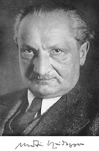
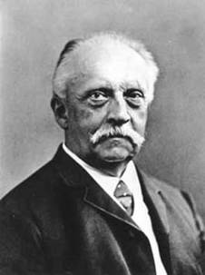
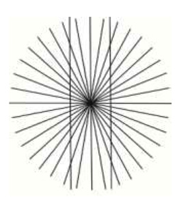
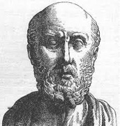
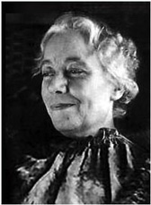
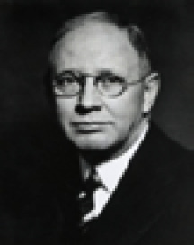
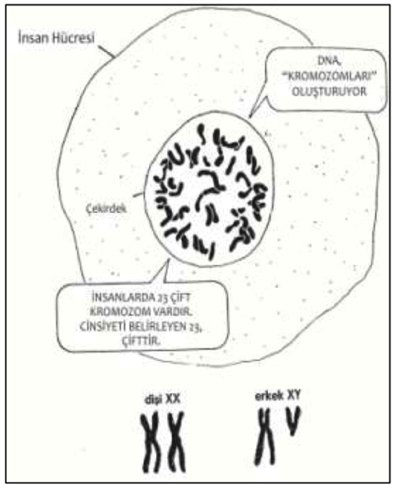

H
haberleşme (informstion) Karşılıklı haber alıp verme, birbirine bildirme, birbirine haber iletme, haber verme.
hadım Bkz. iğdiş.
hadım edilmek Bkz. iğdiş edilmek.
hadım etmek Bkz. iğdiş etmek.
hadımlık kaygısı Bkz. iğdişlik kaygısı.
hadımlık kompleksi Bkz. iğdişlik karmaşası.
hafıza Bkz. bellek.
hafıza kaybı Bkz. bellek yitimi.
hafif zekâ geriliği (mild mental retardation) Zekâ katsayısı 50-70 arasında olan kişilerin zekâ düzeyi. Zekâ geriliklerinin yaklaşık yüzde 80 gibi büyük çoğunluğunu oluşturan ve eğitilebilir diye nitelenen bu zekâ düzeyindeki kişiler, yeterli iletişim becerileri geliştirebiliyor ve ilköğretimin ikinci kademesine dek okuyabiliyorlar. Toplumsal gelişim açısından da ergenliğin ilerisine geçemiyorlar. Böyle olmakla birlikte, kendilerini yönetmek için gerekli basit mesleksel beceriler kazanabiliyorlar. Bkz. zekâ geriliği; zekânın derecelendirilişi.
hak arama sabuklaması Bkz. paranoya.
halk avcılığı (demagogy) (demagoji) 1. Bir tartışmada sözcük oyunları yaparak, argümanları çarpıtarak ya da düzlem dışına çıkarak söz konusu tartışmada üstün gelme çabası. 2. Bir topluluğun düşünce ve duyarlıklarına uygun tümceler kullanarak, onunla çelişmeden kendi çıkarını korumak; çıkarının gereklerini yerine getirirken tümcelerle oynayarak topluluğun çıkarlarına uygun davranıyor görünmek. Bu amaçla başvurulan söz oyunlarına ve süsşü anlatımlara dayalı konuşma. 3. Kitlenin zaafından yararlanarak, insanların duygularını okşayarak kendi çıkarını korumak.
halkbilim (folklore) 1. Halkın kuşaktan kuşağa aktarıp yaşattığı inanç, alışkanlık, gelenek ve görenekler; halk bilgisi. 2. Yaşayan inanç, alışkanlık, söylence ve geleneklerden yararlanarak halkların yaşamını inceleyen karşılaştırmalı bir toplumbilim ya da kültürel antropoloji dalı.
halk eğitimi 1. (folk education) Halk kültürü ile halk sanat ürünlerine ağırlık veren, geleneksel kültürü ön planda tutan bir eğitim. 2. (mass education) Eğitimi az sayıdaki varlıklı ya da ayrıcalıklı kişilerin çocuklarının tekelinden kurtarıp halka mal etme çabası. Eğitim tarihinde, halk eğitimi akımı olarak yer alan bu hareketin amacı, insancıl olmasının yanısıra ekonomiktir. Halk eğitimi, endüstride verimin, okumuş işçilerle daha da artacağı düşüncesi ile savunulmuş genel ve mesleksel bir yetişkin eğitimi türüdür. Bkz. eğitim; eleştirel pedagoji.
halkevleri ve halk odaları (people’s houses and chambers) 1931’de Türk Ocakları kapatılınca Türk aydınlarının gücünü bir noktada toplayarak daha verimli kılmak ve halk eğitimini gerçekleştirmek için Cumhuriyet Halk Partisi’nin kent, kasaba ve köylerde açtığı kurumlar. Bu kurumlar, partinin benimsemiş olduğu cumhuriyetçilik, milliyetçilik, halkçılık, laiklik ve devrimcilik ilkelerini gerçekleştirmek üzere; (1) Dil, edebiyat; (2) Güzdel sanatlar; (3) Temsil; (4) Spor; (5) Sosyal yardım; (6) Halk dershaneleri ve kurslar; (7) Kütüphane ve yayın; (8) Köycülük; (9) Tarih ve müze kolları kurdu. Bu kollar, yurt düzeyinde etkin çalışmalara girişti. En az üç kolun kurulduğu yerlerde halkevleri; daha az kolun etkinlik gösterdiği kasaba ve köylerde de halk odaları açıldı. Halk odalarının çalışma konularını halkevlerindeki işler oluşturuyordu. Kuruluş yıllarında canlı birer kültür merkezi olarak çalışan ve ülkenin aydınlarını çatısı altına toplayan; sahibi olduğu güzel yapılardan halkı yararlandıran bu kurumlar, 1935 yılından sonra, etkin elemanlardan yoksun kalma nedeniyle çalışmalarını gevşetmiş, içyapı sarsıntıları yaşamıştır. 1945’ten sonra da çok partili yaşamın gereklerine uyum sağlayamayan örgüt zayıflamıştır. CHP, çöküntünün önüne geçememiş; 1951’de Demokrat Parti’nin çıkardığı bir yasayla Halkevlerinin binaları hazineye devredilerek çalışmaları sona erdirilmiştir. Bkz Türklerde eğitim (Türkiye Cumhuriyeti’nde Eğitim Devrimi ve Sonrası).
halk psikolojisi (folk psychology) Yazı kültürü olmayan ya da ilkel toplumları ele alıp, bu toplumların geleneklerini, inançlarını, karıkoca ilaçlarının ve üfürükçü, falcı ve benzerlerinin etkinlik derecelerini inceleyen psikoloji dalı; halk ruhbilimi.
halk ruhbilimi Bkz. halk psikolojisi.
halo etkisi (Halo effect) Kişinin olumlu bir özelliğinin, tüm özelliklerine olumlu olarak genellenmesi; ayla etkisi. İnsanlar, bir boyutta olumlu özelliğini gözlemledikleri ya da olumlu buldukları insanı, başka boyutlarda da olumlu bulma eğilimi gösteriyorlar. Halo etkisi, araştırmacıdan kaynaklanan hatalar arasında da yer alıyor; dolayısıyla araştırma ve değerlendirme sonucunu olumsuz etkiliyor. Örneğin, öğretmenin kendi dersinde başarılı bulduğu öğrencinin toplumsal yaşamında da başarılı olacağını yordaması, bu tür olumsuzluğu örneklendiriyor.
hallüsinasyon Bkz. sanrı; varsanı.
ham puan (raw score) Bir testte elde edilip, henüz ayarlama, dönüştürme yapılmamış, ağırlıklı ortalaması alınmamış, yeniden ölçeklenmemiş olan puan. Bu puan genellikle doğru yanıt sayısıyla; kimi zaman da yanlış yanıt sayısının belli oranlarda doğru yanıt sayısından çıkarılmasıyla elde ediliyor. Bkz. çoktan seçmeli test; doğru-yanlış testi.
ham veri (raw data) Ham puanların istatistik açıdan ya da herhangi bir açıdan işlenmemiş, türetilmemiş ya da değerlendirilmemiş değerlerin dağılışı gibi istatistik ya da mantık çözümlemesinden geçmemiş veri.
hapishane eğitimi (prison education) Yetişkin hükümlülere, daha iyi tutum ve davranışlar, ekonomik bağımsızlık sağlayacak bilgi ve beceriler kazanarak topluma dönebilme olanağını veren eğitim ve çalışma programlarını uygulama; cezaevi eğitimi.
hareket (motion, movement) 1. Varlıkların yer değiştirmesi. 2. Düşünce ya da eylem birliği. Dinsel nitelik taşıyan düşünce ya da eylem birliği dinsel hareket; belli insan toplulukşlarının düşünce ya da eylem birliği toplumsal hareket; belli bir felsefi çizgide oluşan düşünce ya da eylem birliği felsefi hareket; belli bir ideolojik çizgide oluşan düşünce ya da eylem birliği de ideolojik hareket olarak adlandırılıyor. Bkz. devinim yitimi: devimsel eşgüdüm; hareket sinir hücreleri; hareket tedavisi; hareket yanılsaması.
hareket kaybı Bkz. devinim yitimi.
hareket sinir hücreleri Bkz. sinir hücresi.
hareket tedavisi (movement therapy) Hastaların, ritmik alıştırmalar, müzik eşliğinde dans gibi devinimlerle duygularını dile getirmeye, gerilimlerini hafifletmeye, daha iyi bir vücut imgesi geliştirmeye, kendi bedenlerini daha çok ayrımsamaya, daha etkili toplumsal etkileşimler gerçekleştirmeye yöneltildiği bir tedavi biçimi; hareket terapisi, devinimsel sağaltım. Bkz. oyunla tedavi.
hareket terapisi Bkz. hareket tedavisi.
hareket yanılsaması Bkz. vertigo.
hareki koordinasyon Bkz. devimsel eşgüdüm; devimsel uyum.
harf devrimi (alphabet revolution) Arap harfleri yerine yeni Türk harflerinin geçişini sağlayan devrim. Arap harfleriyle yazı yazmada ortaya çıkan zorluklardan kurtulmak için Türkiye Cumhuriyeti Cumhurbaşkanı Atatürk, 9 Ağustos 1928 günü akşamı İstanbul’da Sarayburnu parkında şunları söyledi: “Arkadaşlar, bizim ahenkli, zengin bir dilimiz, yeni Türk harfleriyle kendini gösterecektir.Yüzyıllardan beri kafalarınmızı demir bir çerçeve içinde bulunduran, anlaşılmayan ve anlamadığımız işaretlerden kendimizi kurtarmak ve bunun gerekli olduğunu anlamak zorundayız. Bunu anladığımıza yakın zamanda bütün dünya tanık olacaktır. Buna kesinlikle inanıyorum. (…).” Atatürk’ün bu sözleri bütün yurtta büyük bir heyecan yarattı. O günden sonra parti merkezlerinde, okullarda, İstanbul radyosunda verilen derslerle halk yeni harfleri öğrenmeye başladı. Ulusu cahillikten kurtarmak için girişilen bu devrim hızla gelişti; Türk ulusu, kendi diline uymayan Arap harflerini bırakarak Latin alfabesine dayanan yeni Türk harflerini kabul etti. 01 Kasım 1928’de Türkiye Büyük Millet Meclisi’ndeTürk Harfleri Yasası’nın kabul edilişiyle yurt düzeyinde Millet Mektepleri adı verilen dershaneler açılarak halkımız, kısa sürede bu harfleri öğrendi. Atatürk’ün istenciyle gerçekleşen bu devrim sayesinde Türk çocukları, okuma yazmanın zorluklarından kurtulmuş oldu. Bkz. Ulus Okulları.
hars Bkz kültür.
hassas bölge Bkz. duyarlı bölge.
hasta (patient) Sağlığı bozuk olan, esenliği yerinde olmayan, organlarından bir ya da birkaçının işleyişinde bir bozukluk duyumsayan (kimse, hayvan).
hasta birey ve toplum Bkz. özgürlükten kaçış yaklaşımı (Hasta Birey ve Toplumdan Sağlıklı Birey ve Topluma).
hastalığa kaçış (flight into illness) Bilinçsiz bir stres ortam ve duygularından kaçınma aracı olarak, önemsiz bedensel yakınmaları abartma eğilimi. Bu yakınmaların genellikle organik bir temeli yoktur. Psikanalizde bu, altta yatan çatışmanın çözümlenmesini engellemeye yönelik bir savunma olarak değerlendiriliyor.
hastalığı hazırlayıcı aile yapısı (pathogenic family pattern) Ruh hastalığına ortam oluşturduğu düşünülen aile içi tutumlar, standartlar ve davranışlar. Çocuklarını reddeden, aşırı koruyan, aşırı şımartan, kusursuz yapmak isteyen, kardeş rekabetine iten; karı koca olarak çatışan, çelişkili davranan; aşırı katı, aşırı hoşgörülü olan, tutarsız disiplin uygulayan aile yapısı. patojenik aile yapısı.
hastalık bilimi Bkz. patoloji.
hastalık fobisi Bkz. hastalık korkusu.
hastalık hastalığı (hypochandria) Kişinin zihninin bedensel işleyişle aşırı ilgilenmesi; kalp atışı, terleme, bağırsak hareketleri gibi normal durumları ya da hafif ağrıları, burun akıntısı gibi hafif rahatsızlıkları, tıpsal müdahale gerektiren önemli bozukluk belirtileri olarak yorumlaması biçiminde tanımlanan bir ruhsal bozukluk; hipokandri, hastalık kaygısı, sayrılık sayrılığı. Muayene ve tahlillerin olumlu sonuç vermesi, hastalık hastasının, sağlığı konusundaki kaygılarını daha da artırmaktan başka bir işe yaramıyor; kişi, tıpsal aramayı sürdürüyor.
hastalık kaygısı Bkz. hastalık hastalığı.
hastalık korkusu (pathophobia, nosophobia) Hastalıktan, acı çekmekten; özellikle kimi hastalıklara yakalanmaktan aşırı biçimde korkma, ürkme; onlara karşı akıl almaz önlemler alma; patofobi, hastalık fobisi, hastalık yılgısı, sayrılık ürküsü.
hastalıklı suçluluk duygusu Bkz. suçluluk duygusu.
hastalık ürküsü Bkz. hastalık korkusu.
hastalık yılgısı Bkz. hastalık korkusu.
haşhaş (hashish) Haşhaş bitkisinden elde edilen ve sindirildiğinde ya da içildiğinde psikoaktif özellikler gösteren bir uyarıcı.
hatıra Bkz. anı.
hatıra getirme Bkz. anımsama.
hatırda tutma (retention), mneme) Bir uyarı, yaşantı ya da tepkinin sürekli artimgesi, uzun ömürlü izi; anıda saklama. Öğrenme, bellekte tutma, alışkanlık edinme, beceri kazanma ve yaşantıların sonucunda gerçekleşen her türlü gelişim, hatırda tutma ile varlığını koruyor. Buna dayanarak, daha sonra elimize geçen fırsatlarda tepkilerimizi değiştirebiliyor ya da yeni yaşantılar oluşturabiliyoruz. Hatırda tutmada azalış, unutma; artış ise, anımsamadır.
hatırlama Bkz. anımsama
hatırlama eğrisi Bkz. anımsama eğrisi
hatları belirsiz mantık Bkz. zihinsel temsil.
hava odacığı Bkz. SKİNNER, Burrhus Frederik.
Hawthorne deneyi Bkz. Hawthorne etkisi.
Hawthorne etkisi (Hawthorne exreriment, Hawtorne effect) 1927-1939 yılları arasında Mayo ve arkadaşlarının, ABD Westren Electric Company’nin elektrik bölümünde yaptığı bir dizi çok önemli ve tanınmış işletme psikolojisi deneyleri; Hawthorne deneyi. Bu deneyler, işyerlerinde bir dönüm noktası niteliğini kazanmıştır. İşyerlerinde işçilerin birlikteliği ve morali üzerinde toplumsal- ruhsal havanın, dinlenme, çalışma süresi, ışıklandırma, havalandırma gibi dış etkenlerden çok daha etkili olduğu saptanmıştır. İşçiye tepeden inme, anlayışsız ve içten olmayan davranışların, olumsuz ve ters etki yaptığı belirlenmiştir.
haya Bkz. erbezi.
hayal Bkz. imge.
hayalet bacak (phantom limb) Kesilen bacağı, göğsü, penisi, yerindeymiş gibi duyumsama. Bu yanılsama, vücut imgesinin zedelenmeden sürmesine bağlanıyor; çünkü tek bacaklı doğan kişilerde olmayan bacak duyumsanmıyor. Hayalet bacak genellikle karıncalanma, kaşıntı, yanma duygularıyla kendini belli ediyor ve bir ölçüde sinir uçlarının uyarımından; bir ölçüde de ruhsal tepkilerden kaynaklanıyor. Bkz. yalancı duygu.
hayal etme Bkz. düşleme; imgeleme.
hayali arkadaş Bkz. imgesel arkadaş; düşsel arkadaş.
hayat ağacı Bkz. omurilik.
hayatta kalma suçluluğu (survivalguılt) Toplanma kampı, doğal afet gibi birçoklarının yaşamını yitirdiği durumlardan kurtulmuş olanların duyduğu suçluluk duygusu. Bu duygu, başkalarının yaşamını tehlikeye atacak davranışlar yapmış olma suçlaması ya da inancıyla insanların yaşamını kurtarabilecek bir şey yapmış olması gerektiği düşüncesiyle ya da çocukların ölen anne babalarının suçunu üstlenmesine yol açan bulanık bir “Kötü bir şey yaptım.” duygusuyla daha da derinleşebiliyor. Hayatta kalma suçluluğu ilk kez Nazi toplama kamplarından kurtarılanlarda gözlemlenmiştir. Bkz. zulüm sendromu.
hayvancıl cinsellik (katasexualty, necrophillia) Kişinin ölü insanla cinsel ilişki kurarak ya da ölü insanı seyrederek cinsel doyum elde ettiği çok az görülen bir sapma; nekrofili. Tama yakını erkek; çoğu psikotik olan ve normal cinsel ilişkiye ilgi duymayan bu kişiler, kimi zaman da kurbanı önce öldürüyor, sonra ilişki kuruyorlar. Çoğunluğu ise morglardan ya da mezarlardan ceset çalıyorlar.
hayvan korkusu (zoophobia) Hayvanlardan; genellikle zararsız hayvanlardan aşırı derecede korkma; zoofobi. Bkz. fobi.
hayvan psikolojisi 1. (animal psichology) a. Değişik hayvan türlerinin davranışlarını karşılaştırmalı olarak inceleyen psikoloji dalı; hayvan ruhbilimi. b. Hayvan denekler kullanılarak sürdürülen her tür psikoloji çalışmalarıyla elde edilen bulgular. 2. (ethology) Hayvan psikolojisinde karşılaştırmalı davranış araştırmaları karşılığında kullanılan yeni bir terim; etoloji. Bu yaklaşımda hayvan davranışları, doğal çevrelerinde inceleniyor; “Her hayvan türünün kendine özgü doğal bir çevresi vardır; hayvanın davranışları ancak bu doğal çevreleri içinde incelenirse bir anlam taşır.” görüşünden yola çıkılıyor. Örneğin, kafesteki kaplan, yiyeceğini elde etmek için en yalın bir dolanma deneyini bile çözemeyen akılsız bir yaratık olarak görünüyor. Çünkü içine konulduğu bu yapay çevre, onun için hiçbir anlam taşımıyor; oysa doğal avını yakalamak için, çok daha zor deneyleri başardığı görülüyor. Çok önceleri üzerinde çalışılan bu konu, 1935’ten sonra K. Lorenz ve Tinbergen’in nesnel çalışmaları ile yeniden canlandırıldı. Bu yaklaşım, davranışçılık ve yeni davranışçılık görüşlerine karşıt bir bilimsel çalışmadır. Bunda genellikle davranışlar bütün olarak ele alınıp yorumlanıyor. Ayrıca, bütün kuramsal içgüdü tanımlarına da karşı çıkılıyor.
hayvan ruhbilimi Bkz. hayvan psikolojisi.
hayvan sapıncı (zoophilia) Hayvanlarla cinsel ilişki tutkusu olarak bilinen bir parafili; zoofilya.
haz Bkz. hoşlanım.
haz-acı ilkesi (pleasure-pain, principle) Psikanalizde, insan yaşamını haz ilkesi ya da onun değişik bir biçimi olan gerçeklik ilkesi ile acı ilkesinin denetlediğini ileri süren görüş; haz ve elem prensibi, hoşlanım-acı ilkesi. Buna göre, haz ilkesi, libido ya da yaşam içgüdüsüyle; acı ilkesi de ölüm içgüdüsüyle kendini gösteriyor. Bkz. yapısal kuram.
hazcılık (hedonism) Zevk almayı yaşamın temel amacı kabul eden felsefe öğretisi; hedonizm. Psikiyatrik söylemde hazcılık, zevk arayan davranış, anhedonia’nın (zevk veren işlerden bir zevk alamama durumunun) karşıtıdır.
haz duymak Bkz. içgüdü kuramı.
hazırlık (preparation) 1. Herbart’ın 5 öğrenme basamağının ilki.. 2. Gözetim altında yapılan çalışmalarda öğretmenin, ele alınacak konuya karşı ilgi uyandırması (temel hazırlama). 3. Karmaşık bir eylemin ilk adımı; eylwmciyi ya da eylemcileri hazır duruma getirme aşaması. 4. G. Wallas’a göre, yaratıcı düşünmede bir aşama. Düşünür, bu aşamada, yaratacağı (ortaya koyacağı) yapıta ilişkin bilgi, beceri ve teknikleri elde ediyor. Bu adımdan sonra da oluşturma, aydınlanma ve doğrulama adımlarını atıyor.
hazırlık dönemi Bkz. bilişsel alan kuramı.
haz ilkesi (pleasure principle) Psikanalizde, hazzın içgüdüsel gerginlikleri düşürdüğünü; bütün ruhsal olayları en az acı; en çok ise haz isteğine bağladığını savunan ilke; zevk prensibi. Bu ilkeye göre, gelecekteki sonuçları düşünülmeden, hazların olgun bir benlikçe denetlenmeden anında doyurulması, içgüdülerin olağan bir özelliği olarak ortaya çıkıyor. Bkz. yapısal kuram.
hazır olma-olmama yasaları (law of readiness and unreadiness) E. L. Thorndike’ın, öğrenmenin kolaylaştırıcı, doyurucu ve engelleyici koşullarını belirleyen üç yasası.
hazıroluş Bkz. hazırlık; öğrenmeye hazıroluş.
haz ve elem prensibi Bkz. haz-acı ilkesi.
HEBB, Donalt Olding (1904-1985) Kanadalı psikolog. Psikoloji doktora derececini almadan önce öğretmenlik, çiftçilik ve işçilik yapmış olan Hebb, özellikle davranış örgütlenmesi, öğrenme, beyin travmalarının zekâ üzerindeki etkileri, bireysel ayrılıklar konularında birçok araştırma yapmış olan Cattell’in akışkan ve kristalleşmiş zekâ kuramını sunduğu konferansla eş zamanlı bir konferansta çok yönlü zekâ yapısını destekleyen nörofizyolojik bulgularını sunmuştu. Bkz. faz sırası; Hebbian öğrenme kuralı; öğrenme kuralı.
Hebbian öğrenme kuralı (Hebbia learning rule) Hebb’in, iki sinir hücresinin aynı anda etkinleştirilmesi durumunda aralarındaki bağlantının güçleneceği kuralı: Birlikte ateşlenen, birbirine bağlanır. Bu kural, giriş yapılarının tümü dikey ya da birbiriyle ilişkisiz olduğu sürece iyi işliyor. Ancak, bu dikeylik koşulu, Hebbian öğrenme kuralını önemli ölçüde kısıtlıyor. Buna karşılık, sisteme verilen ağırlıkların değiştirilmesinde her bir çıkış biriminin istenen çıkışı ile eylemli çıkışı arasındaki tutarsızlığı kullanan delta kuralı, daha güçlü bir kuraldır. Bkz. öğrenme kuralı.
hebefreni Bkz. şizofreni (Gerilemeli Şizofreni).
hebefrenik şizofreni Bkz. şizofreni ((4) Gerilemeli Şizofreni).
hedef Bkz. amaç, erek, gaye.
hedef analizi (goal analysis) Eğitimde hedef (erek) olan bireylere istendik davranışları kazandırma amacına (ereğine) ne kadar yaklaşıldığını belirlemek için yapılan analiz; hedef çözümlemesi. Eğitilen bireylere, amaçlanan istendik davranışları kazandırmak için her eğitim etkinliği ile belirli hedefler doğrultusunda çaba gösteriliyor. Belli bir eğitim sürecinde istenilen hedeflere ne kadar ulaşıldığını belirlemek için hazırlanan testlerin o eğitim sürecinde işlenen konuları içermesi; geçerli ve güvenilir olması gerekiyor. Bkz. geçerlik; güvenirlik. Hedefler, testler aracılığıyla, testlerdeki maddelerin davranışlara çevrilmesiyle yoklanıyor. Bu amaçla oluşturulan testler, hedeflerin doğru bir çözümlemesinin yapıldığı belirtke tablosuna uygun olarak hazırlanıyor. Örneğin, bilişsel hedeflere yönelik bir eğitimin belirtke tablosu bilgi, kavrama, uygulama, çözümleme ve değerlendirme bölümlerini içeriyor; bu hedeflere de her konu ile onların alt konularından sorular serpiştirilerek, testin ölçmek istediği hedefler saptanıyor.. Hedeflerin Oluşturulmasında Göz Önünde Tutulması Gereken Özellikler: (1) Belirlenen hedef, ne çok genel ne de çok sınırlı olmalıdır. (2) Hedefler, herkesçe aynı anlama gelecek biçimde somut ve açık olarak anlatılmalıdır. (3) Test maddeleri, hedeflere uygun olarak hazırlanmalıdır. (4) Belirtke tablosunda yer alan her hedefin ve konunun ağırlığı yüzde olarak saptanmalı ve soruların sayısı, bu yüzdeye uygun olmalıdır. (5) Dikey sütunlarında hedeflerin; yataylarda da işlenen konu başlık ve alt başlıklarının yer aldığı ve bunların çakıştıkları noktalara yüzde ve sayılar yazılmalıdır. Bloom’un belirlemiş olduğu aşamalı sınıflamaya (taxonomy’ye) göre bireylere kazandırılacak olası hedefler, aşağıdaki gibi üç ana alana ayrılıyor. 1. Bilişsel alan (cognitive domanin): Bu alan, kuramsal bilgilerden doğan zihinsel işlevleri içeriyor. Bu alana ilişkin davranışlar; bilgi, kavrama, uygulama, çözümleme, bireşim ve değerlendirme diye altı bölüme; bunlar da kendi içlerinde alt bölümlere ayrılmıştır. Örneğin, çözümleme; öğelerin çözümlemesi, öğeler arasındaki ilişkilerin çözümlemesi ve örgütleme ilkelerinin çözümlemesi alt basamaklarını içeriyor. 2. Duyuşsal alan (affective domain) Bu alan, bireylerin duygularını, ahlak değerlerini içeriyor. Bölümleri; algılama, algılamaya tepkide bulunabilme, değerleme, örgütleyebilme ve nitelendirmedir. Bu beş bölüm de kendi içinde alt bölümlere ayrılmıştır. Örneğin, örgütleme; bir değerin kavramsallaştırılması ve bir değer sistemi örgütleme olarak iki alt basamakta inceleniyor. 3. Ruhsal-devimsel alan (psychomotor domain). Bu alan da bireyin zihinsel işlevleriyle bedensel etkinliklerini uyumlu olarak birleştirip birleştirmediğini gösteriyor. Bu alana ilişkin davranışlar; kaba devinimler, eşgüdümlü devinimler, sözsüz iletişim davranışları ve konuşma olarak dört basamakta toplanmıştır. Onlar da ayrıca alt basamaklara ayrılıyor. Örneğin, sözsüz iletişim davranışları; yüz anlatımı, jestler ve beden devinimleri alt basamaklarına ayrılmıştır. Ruhsal-devimsel alan, edim testleriyle ölçülüyor. Bkz. Bloom’un bilişsel öğrenme sınıflaması; eğitim (eğitimin amacı); geçerlik; güvenirlik.
hedef çözümlemesi Bkz. hedef analizi.
Hedeflerin Oluşturulmasında Göz Önünde Tutulması Gereken Özellikler Bkz. hedef analizi.
hedonizm Bkz. hazcılık.
HEİDEGGER, Martin (1889-1976) Yeni bir varoluşçuluk anlayışı geliştirip insan varlığının özünde kaygının bulunduğu görüşünü savunan Alman düşünür. Messkirch’da, Baden’de doğdu; Freiburg’da öldü. Freiburg Üniversitesi’nde E. Husserl’in öğrencisi oldu. Felsefe, psikoloji ve tanrıbilim okudu. 1913’te düşünür H. Rickert’in yanında yaptığı çalışmasıyla doktora derecesini aldı. 1916’da aynı üniversitede doçent; 1923’te de Marburg Üniversitesi’nde profesör; sonra da ordinaryüs profesör oldu. Nazilere yakınlık duyduğu gerekçesiyle 1945’te görevine son verildi; 1952’de yeniden görevine döndü ve 1959’da emekli oldu. Onun felsefesi, var olan; ancak “burada” olan (dasein) kavramına dayanıyor. Temel varlık, “burada olan”dır. Varlıkbilimin ana konusu budur. O, özü, içeriği ortaya konarak tanımlanamaz; onun özü varoluşundadır. Heidegger, Oluş ve Zaman adlı yapıtında varoluşçulukla ilgili görüşlerini açıklamış ve görüngübilimde (fonomenolojide) benimsenen çözümleme yönteminin bu alanda da uygulanması gerektiğini savunmuştur. “Varlık nedir?” sorusundan yola çıkan bu öğretide önem taşıyan, varoluşun yorumunun temel çizgileriyle ortaya konmasıdır. Varoluşçuluk, varlıkbilim niteliğindedir. Görüngübilim ise varoluşun betimleyici, sınırlandırıcı bir varlıkbilimidir. Bütün bilimlerin temelini, bu bilimin benimsediği çözümleme oluşturuyor. Varoluş, kendi niteliklerinin oluşturduğu bütünlük içinde vardır. Onu kavramak için önce insanı anlamaya çalışmak gerekiyor. İnsanlığı kendi varlığında bütünüyle yansıtan insanın özü, var olmaktır. Bu var olmayı ele alan felsefe, insan varlığının yorumundan yola çıkan, kendi ilgi alanına giren odakları bu varlığın doğduğu ve sonunda döneceği yerde bulan, görüngübilime dayanan bir varlıkbilimdir. Varoluşçuluğun benimsediği çözümleme, insan varlığını kendi özel varoluşuyla ve doğrudan aydınlığa çıkarmaya çalışıyor. Ayrıca insan varoluşunun görüngübilime dayalı yorumlanışı da bir yöntemdir. Bu yöntemin amacı, varoluşu, dıştan bir gözlemci gibi bakmadan, kendi akışı içinde kavramaktır. Yaşam, bu varoluşun içkin sürecidir. Heidegger kuramına göre insan, en yüce görünüş aşamalarında bile sınırlı, sonlu, aşağı nitelikte bir varoluştur. Çünkü insan varoluşu, köklü bir kaygı içeriyor. Bu kaygı, insanın evren içinde yitmişliğin bilincine varışından kaynaklanıyor. Evrende yitmişliğin anlamının kavranmasıyla sarsıcı bir durum olan korku ortaya çıkıyor. Sıkıntı ise insan varlığının kendini bırakması, kendinden çözülmesidir. İnsanı bu üç varlık kuşatmıştır. Ancak, kaygının temelini de varoluşun varlığının anlam ve temelini de zaman oluşturuyor. Zaman, kendi gelişim evreleri olan geçmiş, şimdi ve gelecek içinde bir bütün olarak kavranabiliyor. Zamanlaşma, bu üç boyutun birliği ile gerçekleşiyor. Zaman, gerçekte kendi üzerine yığılarak uzayıp giden bir akıştır. O, yalnız gelecekte aşkın bir nitelik kazanıyor. Ne varoluş, zaman içinde yerleşmiştir ne de zaman varoluşun açık bir belirtisidir. Zaman yoktur; o, boyuna kendi kendini zamanlaştırıyor. Zamanlılığın temelini gelişim oluşturuyor. Zamanla varoluş arasındaki bağlantı, insanı kaygı ile karşılaştırıyor. İnsan, evreni tanımadan, kendini onun içinde buluyor. Gerektiği kadar bilinmeyen evren, içinde yaşayan insana kaygı konusu olarak görünüyor. Bu kaygı, insanın nesnel evrende duyduğu derin bir ürküntüdür. İnsanın evrenle ilgilenmesi, özgür istencinin değil; varlığının, içinde bulundığu doğasının yapısından ileri geliyor. Başta evrene duyulan ilgi, sonra sırasıyla topluma, ulusa, uygarlığa yöneliyor. Evrenin yarattığı kaygı, öte yandan insanı soydaşlarıyla yüz yüze getiriyor, ona soydaşlarıyla ilgilenme gereğini duyuruyor. İki türlü kaygı vardır. Birincisi günlük yaşamın içinde beliren ve belli bir bireyde odaklaşan kaygı; ikincisi ise varoluş karşısında, evrene bırakılmışlığın insanı saran uçurumun bilincine varmaktan doğan kaygıdır. Birinci tür kaygıda görüngübilimin incelemesi gereken, belli bir kişi değil; “herkes”tir. Bu, toplumdaki ortalama bir kişiyi (varlığı) yansıtıyor. Bu belirsiz özne, varlığın daha önceden bilindiğini ve herkesçe kavranabileceğini ortaya koymakla kendini ve başkalarını sorumlu olmaktan kurtarıyor. Ne ki bu, evrensel bütünün kavranmasını engelliyor. Bundan başka bu belirsiz özne, bütün değerleri yadsıyor; onun isteği, varoluşun olabilirliğini dümdüz bir duruma getirmek, toplumda bir değerler aşamasının oluşumunu önlemektir. Bu nedenle bu durumda insan, evrendeki gerçek yerini bulamıyor, evrene yabancılaşıyor. Oysa “varoluşun başlıca niteliği, evren içinde var olmaktır. Kaygının ikinci türünde ahlak sorunları, vicdan, ölümün görüntüleri ortaya çıkıyor. Burada bireyi aşan ve uyulması gereken kural, üzüntüyü sıkıntıya dönüştürüyor. O da yapısı gereği, yeni bir sorun ortaya çıkarıyor. Öznesi belirsiz kişi, bu yeni sorun karşısında kendine özgü tutumunu takınıyor; herkesin öleceğini düşünerek avunmaya çalışıyor. Heidegger, ölüm sorununu kaygıdan yola çıkarak şöyle açıklıyor: Ölüm, varlığın çok kişisel, çok aşılmaz nitelikteki bir olanağıdır. Ölüm, varoluşun varlığı olarak nitelenen kaygı üzerine kurulmuştur. Bu nedenle ölüm için varlık, varoluştan ayrılamayan bir öğedir. İnsanlar, ölüm nedeniyle kendikendilerine düşüyorlar. Ölüm, varoluş açısından, yine ölüm aracılığı ile yorumlanıyor. Bu durum, insanı yüreklendiriyor ve insan, bilerek, isteyerek ölüme boyun eğiyor. Heidegger’e göre bilgi, insandan bağımsız bir konu değildir; insanla ilgili çözümlemelere dayanıyor. Varlığa ilişkin bilgi edinmeyi sağlayan yöntemi, bu çözümlemeler ortaya koyuyor ve biçimlendiriyor. İnsan, çevresinden soyutlanarak ele alınınca onunla ilgili bilgileri edinme olanağı ortadan kalkıyor. Ancak, somut varlık özelliklerinin çözümlenmesinde son amaç, insanın bütün davranışlarında ortaya koyduğu, “burada olan olandır”. İnsanı ve gerçeği kavramayı sağlayacak bilginin kaynağı budur. Yaşantıların anlamını ve onun ardından varlığın gerçeğini ortaya çıkaran özel bir yöntem vardır. Bu yöntem, iç düşünmeye dayanan gerektirici bir görüngübilim yöntemidir. Ancak, bu yöntemin çözümlemeye çalıştığı fainomenon, alışılmış anlamındaki görünüş değildir; kendi kendinde görünen varlık demektir. İşte edinilecek bilgi, bu tür varlığın bilgisidir. Heidegger, bilgi ve yöntem ilişkisini sonunda insan-varoluş-nesne-olay-yöntem bağlantısına dönüştürüp bütünleştirmiştir. Heidegger’in felsefesinde varoluşla birlikte ele alınıp incelenen temel sorunlardan biri de evrendir. Onun önde gelen özelliği, varoluşu içermesidir. Çünkü dasein, evrende var olmaktır. Evren nesnelerden oluşmamıştır; özü gereği, kendi kendisi için olan araçlardan kurulmuştur. Bu araçların başlıca özelliği, “her zaman el altında olma” niteliği taşımalarıdır. Her araç, sürekli olarak başka bir araçla ilişki içindedir ve aracı kullananla da bağlantılıdır. Bütün araçların bir yeri vardır; bu yeri sağlayan ise yakınlık kavramıdır. “Burada-olan”, araçla yakınlık kurma eğilimindedir; bunu sağlayan ise ilgidir. “Burada-olan”ın evreni, bir birlikte olmadır. “Burada-olan”, kendi özü gereği, bir ortaklaşa varlıktır. Heidegger, felsefesinin odağını oluşturan “dasein” kavramından, dil konusunda da yararlanmıştır. Belli bir varlık ve varoluş biçimini belirten bu kavram, dilde “anlama, kavrama ya da tam algı niteliği ile açıklığa kavuşturma”dır. Ancak, açıklığa kavuşturma, bir anlatım demek değildir. Ondan sonra söz gelir. Söz, dilin temelidir. İnsan, “konuşan varlık”tır. Onda söz dinleme, anlama gibi yetiler vardır. Bunları, çevresini kuşatan ve kendi ben’ine yabancı olan kişilerden kurtulmak için kullanabilir. İşte bu kurtulma, ayrılma eylemi, bir seçmedir. Seçme, kişinin kendini kavraması, gerçek bir ben olabilmesi için giriştiği eylemi gösterir. Bunu başarmak, kesin bir yargıda bulunmaya, yapılacak olanı belirlemeye bağlıdır. Bu ben olabilme amacındaki yargı, vicdanı oluşturan, onun varlığına tanıklık eden tek etkendir. Ancak, vicdan dirimsel bir olay değildir; suskunluk içinde bütünleşen bir iç daralması biçiminde kendini gösteren eğilimdir. Heidegger, görüngübilim-varlıkbilim yöntemini insanın evrenle, başka kişilerle, toplumla olan bağlantılarını, inanç, sanat, dil sorunlarını açıklamada uygalayarak varoluş kavramına yeni bir içerik kazandırmıştır. Bununla şair, yazar, düşünür, bilgin, bilge, ressam, yontucu, tiyatrocu, müzisyen gibi çok değişik uğraşı olan insanları etkilemiştir. Başlıca yapıtları: Sein und Zeit, 1927 (Oluş ve Zaman); Was ist Metaphysik?, 1929 (Metafizik Nedir?); Vom Wesen der Wartheit, 1943 (Gerçekliğin Özü Üstüne); Was heisst Denken?, 1954 (Düşünme Nedir?); Was ist das-die Philosophie?, 1956 (Felsefe Nedir?); Der Satz vom Grund, 1957 (Temel Önerme); Gelassenheit, 1959 (Bırakılmışlık); Untervegs zur Sprache, 1959 (Dile Giden Yolda); Nietzsche, 1961. Bkz. varoluşçu psikoloji.

hekimlik psikolojisi (medical psichology) Psikolojinin bilgi ve yöntemlerini hastalıkların tedavisine uygulayan psikoloji dalı; tıbbi ruhiyat, tıpsal psikoloji, hekimlik ruhbilimi.
hekimlik ruhbilimi Bkz. hekimlik psikolojisi.
Hellin yasası (Hellin’s law) Çoğul doğumlarda bebeklerin sayısı arttığı oranda genel nüfus içindeki bütün doğumlara göre görünüş sıklıklarının geometrik bir oranda azalacağını belirten kural.
HELMHOLTZ, Herman Van (1821-1894) Alman fizikçi, fizyolog ve psikolog. Berlin yakınlarında dünyaya gelen Helmholtz, tıp eğitiminden sonra orduda cerrah olarak göreve başladı. Bu dönemde fizyoloji çalışmalarını yürüttü. Daha sonra, geliştirdiği enerjinin korunumu yasasıyla ünlendi. Bu yasayı canlılara da uygulayarak, bir hayvanın harcadığı enerjinin, aldığı enerjiden daha çok olduğunu kanıtladı. Bununla, o dönemde yaygın kabul görmekte olan ve canlıların, fiziksel güçlerinin ötesinde özel bir “yaşam gücü”ne sahip olduğunu savunan canlıcılık öğretisine ağır bir darbe vurdu. Böyle olmakla birlikte, Helmholtz’un psikolojideki yeri daha çok, duyu ve algı konusundaki kuram ve bulguları bugün bile yaygın kabul görüyor. Bkz. bilinçsiz çıkarsama, piyano kuramı; üç renk kuramı.

hemoliz (hémolyse) Kanda osmaz basıncı azaldığında, örneğin damara damıtık su şırınga edildiği zaman görülen olgu. Damıtık su verilince alyuvarlar su emerek aşırı biçimde büyüyor ve bozuluyor. Bkz. Rh etkeni.
Herbart’ın beş öğrenme basamağı (Herbartian steps in learning) Johan Frederich Herbart’ın 19. yüzyılda ve 20. yüzyıl başlarında öğretmen yetiştiren kurumlarda geniş ölçüde benimsenmiş olan beş öğretim adımı şunlardır: (1) Hazırlık. Öğrenmeyi sağlama sırasında öğretmen, konunun tarihçesine dokunarak, konuya karşı öğrencide ilgi uyandırmayı amaçlıyor (öğrenciyi konuyu izlemeye hazır duruma getiriyor). (2) Sunum. (3) Bağlantı kurma. (4) Özetleme. (5) Uygulama. Her derste, bu beş basamağa bağlı kalınması isteniyordu. Bkz. dizgeli eğitimde ders planı düzenleme; öğrenme-öğretme yaklaşımları.
her çocuğa yararlı olmak Bkz. MONTESSORİ, Maria.
Hering yanılsaması (Hering illusion) Kusursuz ölçüde birbirine koşut olan iki çizginin, şekildeki gibi bir zemin üzerinde orta yerleri şişkince birer çizgi gibi algılanması.

Hering Yanılsaması
hermafrodit (hermophrodite) Bedensel cinsel özellikleri açısından erkek ya da kadın olarak nitelendirilemeyen; iki cinsin de örneğin hem penis hem de vajina gibi cinsel özelliklerine sahip olan kişi; erseliksel, erdişisel. Bu bozukluk, Turner sendromu, klinefelter sendromu gibi kromozom anormallikleri, androjen duyarsızlığı gibi doğumsal metabolizma bozuklukları, hormonal dengesizlikler ve benzerlerinden kaynaklanıyor. Gerçek hemafroditlerin kromozomları da örneğin, yumurtalık dokularında XX kromozomlarının bulunması, testis hücrelerinde XY kormozomları bulunması biçiminde belirsizlik gösteriyor.
her öğrenciyle tek tek ilişki kurma Bkz. hümanist öğretmenlik (İnsana Saygı).
“Her Türlü Bilgi Şimdiliktir.” Önermesinin İçerdiği Anlamlar Bkz. olabilirlik.
hesap yitimi (acalculia) Basit aritmetik işlemlerini yapamama. Genellikle yan lopun zarar görmesinden ileri gelen bu durum, bir tür söz yitimidir. Kişi ayrıca sayıları yazma ya da okuma yetisinden de yoksun olabiliyor. Bkz. beyin; diskalkuli.
heterojen Bkz. ayrışık.
heterosexuel Bkz. karşıcinsel.
heyecan (emotion) 1. Değişik kuramcıların değişik biçimlerde tanımladığı; yüksek düzeyde bir etkinliğe, iç organ değişikliklerine yol açan yoğun ve güçlü bir duygusal durum; emosyon, coşkulanım. Bu duygusal durum, bedensel ve ruhsal değişikliklere yol açan, yeğin duyguların eşliğinde karmaşık bir davranış olarak ortaya çıkıyor. Belli bir organa bağlı olmayan bu güçlü duygu, bütün bedeni kuşatıyor. Solunumun sıklaşması, kalp atışlarının çoğalması, kan dolaşımının hızlanması, sararma, kızarma bezlerde salgılama artışı ya da azalışı gibi bedensel değişimlere yol açıyor. Heyecan durumunda zihinsel etkinlik de aksıyor; kişi, başkalarının etkisi altında kalıyor; isteğe bağlı denetim azalıyor; kişilik dengesi bozuluyor. Bu bedensel ve ruhsal değişimlerde hem merkez sinir sistemi hem de özerk sinir sistemi etken oluyor. Heyecanlar üzerinde, olumlu ve olumsuz duyguların büyük bir payı bulunuyor. Duygular, bilinçli yaşantılardan kaynaklanıyor. Ya dış uyarıcıların ya da türlü bedensel durumların sonucu olarak ortaya çıkıyor. Örneğin, gülü, yasemini kokladığımız zaman, içimizde hoş bir duygu uyanıyor. Organlar ve kaslardan kaynaklanan uyarıcılar, bizde haz ya da acı duyguları yaratıyor. Güzel bir yemek, istekle yapılan bir çalışma, dost söyleşileri, cinsel duyumlar, genellikle hoş, haz verici duygular oluşturuyor. Hastalık, yorgunluk, başarısızlık gibi olaylar da bize hoş olmayan, acı veren duygular yaşatıyor. Duyguların yalın olmalarına karşılık heyecanlar, daha karmaşık ve yeğin olup tüm bedeni kapsıyor. Hafif bir öfke ya da rahatsızlık, başkalarınca ayrımsanmazken, iç organ ve daha başka değişimlere yol açan derin bir öfke tepkisini sıradan bir gözlemci bile açık seçik görebiliyor. Buna göre duygu ile heyecanı birbirinden ayıran temel özelliklerden biri, heyecanların duygulardan daha yoğun olarak ortaya çıkmalarıdır. O nedenle duygulara ince, hafif heyecanlar; heyecanlara da yoğun, güçlü duygular deniyor. Heyecanlar yeğin yaşanıyor; ama kısa sürüyor ve gözlemlenebiliyor. Duygular ise daha uzun sürüyor ve gözlemlenemiyor. Heyecanlar, güdülerle de ilişkilendiriliyor. Güdülendiğimizde heyecanla da kuşatılıyoruz. Örneğin, korku ile birlikte, içimizde güçlü bir kaçma isteği uyanıyor. Yıkma ya da saldırma davranışında, öfke (kızgınlık) de vardır. Cinsel amaç da kendine özgü heyecansal durumlar yaratıyor. Kimi psikologlar, güdülenme ile heyecanın aynı şey olduğunu ileri sürseler de aralarında ortak özellikler bulunsa da bunların iki ayrı kavram oldukları kuşku götürmüyor. Birincil güdü ya da dürtüler, dönem dönem ortaya çıkıyor ve değişen fizyolojik ritimlere bağlı bulunuyor. Heyecanlar ise uyarıcı durumlara ve bu durumların birey için taşıdığı öneme bağlı gibidir. Normal bir insan, güdülenmedikçe derin bir öfke ya da üzüntü yaşamıyor. Heyecanlar, başkalarının söylediklerine ya da yaptıklarına, işimizin gidiş biçimine, parasal durumumuza, başkalarıyla anlaşmamıza bağlı olarak ortaya çıkıyor. Güdülerin ya da dürtülerin, doyum, alışkanlık biçimleriyle de sıkı ilişkileri bulunuyor. Heyecansal tepkiler ise hazır tepki kalıplarımıza dayanmadan, daha tipik olarak beliriyor. Örneğin, açlık, susuzluk, cinsel gereksinimler, genellikle öğrenerek oluşturduğumuz davranış kalıplarımızla bağı olmayan durumlarda, daha tipik olarak ortaya çıkıyor. Bunlar, yetişkinlerde az çok bir alışkanlık durumuna gelebiliyor. Ancak, sevdiğimiz birini yitirdiğimizde; ormanda dolaşırken bir gömü bulduğumuzda ya da bir ayı ile karşılaştığımızda göstereceğimiz kalıplaşmış, yarı kendiliğinden tepkilere ya da alışkanlığa sahip değiliz. Heyecansal davranışlarımız, çok kez örgütsüz, düzensizdir. Güdülenmiş davranışımız ise tipik olarak bir amaca yöneliktir. Birdenbire ortaya çıkan tipik bir öfke, derin bir acı, dehşet ve benzeri heyecan durumlarında bireyin davranışı, büsbütün örgütsüzlük, amaçsızlık ve aşırı davranışsal tepki özelliği taşıyor. Oysa heyecansal olmayan güdülenmiş davranış, iyi örgütlenmiş, belli bir amaca yönelmiş, eldeki ödeve en uygun bir uyarılma düzenine sahip bulunuyor. Genellikle sevinç, üzüntü, korku, öfke, tiksinti, sevgi, birincil heyecanlar; estetik, kültürel ve ahlaksal heyecanlar da ikincil heyecanlar olarak adlandırılıyor. Temel özellikleri yeğinlik, geçicilik ve gözlemlenebilirlik olan heyecanlar, belli dönemlere bağlı olarak ortaya çıkmamaları; hazır belli davranış kalıplarına bağlı ve bir amaca yönelik olmamaları; örgütlenmemiş ve dağınık olmaları ile güdülerden ayrılıyor. Heyecanlara İlişkin Üzerinde Görüş Birliği Olan Noktalar: Değişik düşünür ve psikologlar, değişik açıklamalar getirseler de; bu alanda daha birçok şey öğrenilmemiş olsa da şu noktalarda görüş birliği oluşmuştur: (1) Heyecanlar, özel bir ruh durumudur ve benliğin yaşantılarından kaynaklanıyor. Duyumlar, algılar gibi nesnel değildir. (2) Belli bir uyarıcı organı yoktur; tüm bedeni saran bir yaygınlık gösteriyor; evrenseldir. (3) Edimseldir; günceldir; bir anı imgesine bağlı değildir. Kimi yetenekler gibi gizilgüç özelliği taşımıyor. (4) Duygusal ve zihinsel bir boşalım ya da parlama özelliği; bir coşma ve çalkantı durumu sergilediği için zihinsel ve organsal işlevlerde aksaklığa ve dengesizliğe yol açabiliyor. (5) Heyecanların ortaya konuluş, anlatılış biçimleri, içinde bulunulan kültüre göre değişiklikler gösteriyor. Bkz. birincil heyecan; coşku; dürtü; güdü; heyecan bozukluğu; heyecan denetimi; heyecan dengesizliği; heyecan evresi; heyecan gelişimi; heyecanlanabilirlik; heyecan olgunluğu ölçeği; heyecan patlaması; heyecansal bağımlılık; heyecansal davranış; heyecansal denge; heyecansal olgunluk; heyecansal ortam; heyecansal örüntü; heyecansal uyma; heyecan uyumu; heyecan yüklemi kuramı; içgüdü.
heyecan bozukluğu (emotionel disorder) Uyaranlar karşısında gösterilen heyecanın baskınlık ve süre açısından gereğinden çok güçlü, uzun ya da çok güçsüz, kısa olması. Bkz. heyecan.
heyecan denetimi (emotionel control) Kişinin heyecansal davranışını çevreye yöneltirken gösterdiği kendini tutma gücü; heyecan kontrolü. Bkz. heyecan.
heyecan dengesizliği (emotional instability) Dış uyaranlarla ilişkili olmadan heyecansal tepkilerde baş gösteren aşırı ve yersiz değişkenlik. Bkz. heyecan.
heyecan evresi (exphase) Cinsel ilişkinin ilk evresi; uyarılma evresi. Bu aşamada penis sertleşiyor, vajina ıslanıyor. Bkz. cinsel tepki döngüsü; heyecan.
heyecan gelişimi (emotional development) Çocukluğun duygusal bağımlılığından kurtulup yetişkinliğin sorunlarını yüklenebilecek ve yetişkinliğe uygun duygu ve heyecan ilişkilerini kurabilecek düzeye erişme. Bkz. çocuk ve ergenin gelişim dönemleri; heyecan.
heyecan kontrolü Bkz. heyecan denetimi.
heyecanlanabilirlik (emotionality) Heyecan yaratan durum karşısında kolaylıkla ve güçlü bir biçimde kişinin tepkide bulunması özelliği; heyecana kapılırlık. Bunda genellikle aşırı tepki söz konusudur; heyecanlılıkta ise denetim vardır. Bkz. heyecan.
Heyecanlara İlişkin Üzerinde Görüş Birliği Olan Noktalar Bkz. heyecan.
heyecan olgunluğu ölçeği (emotional maturuty scale) Kişinin eriştiği heyecansal olgunluk düzeyini ölçmek için kullanılan ölçme aracı. Bkz. heyecan.
heyecan patlaması (emotional decompensation) Genellikle önemsiz ve ufak olaylar yüzünden, birikmiş duyguların birdenbire açığa çıkması. Bkz. heyecan.
heyecansal bağımlılık (emotional dependency) Güvenlik, kılavuzluk ve karar verme gibi konularda heyecansal nedenlerle başkalarına alışkanlık düzeyinde bağlı olma. Bkz. heyecan.
heyecansal davranış (emotion behavior) İstem dışı çalışan içsalgı bezleri, düz kaslar ile kendiliğinden işleyen sinir sistemi ve bunlara ilişkin duyguların etkisiyle ortaya çıkan davranış. Bkz. heyecan.
heyecansal denge (emotional stability) Heyecanlandırıcı durumlar karşısında kişinin aşırı heyecansal tepkiler yapmaması durumu. Bkz. heyecan.
heyecansal olgunluk (emotional maturity) Kişinin çocukluk dönemine özgü heyecansal davranışlardan kurtulup yetişkinlere özgü heyecansal davranışları benimsemiş olması durumu. Bkz. çocuk ve ergenin gelişim dönemleri; heyecan.
heyecansal ortam (emotional climate) İnsan ilişkilerinde ya da toplumsal durumlarda sezilen heyecansal hava. Bkz. heyecan.
heyecansal örüntü (emotional pattern) Belirli durumlar karşısında kişinin yapmaya alışkın olduğu heyecansal tepkilerin özelliği. Bkz. heyecan.
heyecansal uyma (emotional adjusment) Bireyin heyecansal tepkilerinin toplumca benimsenebilecek davranışlarla uyumlu olma durumu. Bkz. heyecan.
heyecan uyumu (emotional rapport) Heyecanlandırıcı durumlara karşı uygun ve yeterli tepki gösterme. Bkz. heyecan.
heyecan yüklemi kuramı Bkz. JAMES, William.
hezeyan Bkz. sabuklama.
hıfzetme Bkz. belleme.
hırsızlık Bkz. çalma.
hırsızlık deliliği Bkz. çalma deliliği.
hısımla sevişme Bkz. ensest tabusu.
HIV Bkz. AIDS.
hızlandırma Bkz. zenginleştirme programları.
hızlı okuma (speed reading) Ortalama okuma hızının üstünde bir hızla okuma. Günümüzün iletişim koşulları hızlı okumayı gerektiriyor. Ancak bu, aşırı önemsenmemelidir. Hız aşırı önemsendiğinde, okunanı anlama oranı önemli ölçüde düşürüyor. Oysa kişi için en iyi okuma, doğru ve okuduğunu anlamasını sağlayacak hızda okumadır. Değerli olan, okuduğunu anlama göz ardı edilmeden artırılan okuma hızıdır.
hız testi (speed test) Edimin (eylemin), belli bir sürede yapılanların ya da doğru çözülen soruların sayısıyla ölçüldüğü test. Bu testlerde doğruluk kadar, hız da belirleyici oluyor. Bkz. güç testi.
hidrosefalus (hydrocephalus) Beynin içindeki boşluklarda aşırı sıvı birikmesi ile oluşan bir hastalık. Karmaşık genetik etkenler nedeniyle doğuştan gelebildiği gibi spina bifida, menenjit, kafa travması, beyinde ur çıkması gibi nedenlerle sonradan da oluşabiliyor; kafa içine; beyne baskı yaparak beyin dokularına zarar veriyor. O nedenle bu suyun alınması gerekiyor.
hidroterapi (hydrotherapy) Sıcak, soğuk su banyoları, su buharı ve buzun tedavi amaçlı kullanımı. Ilıcalar, kaplıcalar, buhar banyoları, saunalar bu tedavi türüne giriyor.
Hintlilerde eğitim (education in İndia) Brahman, asker, esnaf ve tutsak olarak birbirinden ayrılmış olan sınıflardan (kastlardan) oluşan eski Hint toplumunda bu sınıfların birinden öbürüne geçmek olanaksızdı. Burada aile eğitimi temeldi. Çocuk, küçük yaşta hayata atılıyor, iş içinde yetişiyordu. Hintlilerin inanışları, Panteizm felsefesine dayanıyordu. Bu inanışa göre Tanrı, her yerde ve her biçimde görünürdü. Hindulara göre önemli olan vücut değil, ruhtu. O nedenle Budizm’de, her türlü isteklerden, duygulanımlardan, tutkulardan arınıp en yüksek ruh durumuna erişme demek olan nirvana, en büyük mutluluktu. Brahman eğitimi, bireylere yaşamı değersiz, aşağı görmeyi telkin ediyordu. Buda, Brahma dininin ilkelerini biraz değiştirmeye çalıştı. Ona göre, tüm fenalıkların kaynağı, insana özgü isteklerdi. Hinduların öğretmenleri, rahip olan Brahmanlardı. Bunların çocuklar üzerindeki etkisi, onların babalarınkinden fazlaydı. Çocuk, öğretmenine, Buda’ya tapar gibi saygı göstermek zorundaydı. En önemli ceza, çocuğun üzerine su dökmekti. Kadınlara okuma yazma öğretilmiyordu. Yalnızca rahipler yüksek öğretim görüyorlardı. Çocuklar 6 yaşına geldiklerinde ilkokula gidiyorlardı. Onlara şu ahlak kuralları telkin ediliyordu: Hiç kimseyi öldürme! Çalma’ Meşru olmayan cinsel ilişkide bulunma! Sözde ve işte haksızlık etme! İçki içme! Bkz. eğitim tarihi.
hiperaktiflik Bkz. aşırı etkinlik ve dikkat eksikliği.
hipermnezi Bkz. aşırı anımsama.
hipertriodizm (hypertriodism) Tiroid bezinin aşırı çalışması durumu; aşırı kalkanlanma. Bu bozukluk, uyumakta güçlük çekme, kilo yitimi, sinirlilik, bulantı, kusma benzeri belirtilerle ortaya çıkıyor. Bkz. endokrin bezleri.
hipnoterapi (hypnotherapy) Tedavi amacıyla ağırlıklı ya da yardımcı olarak hipnozun kullanılması ile yapılan tedavi. Bu tedavi ile hasta, depresyonu hafifletme, sigarayı bırakma, daha az yemek yeme gibi belli bir davranışa yönlendiriliyor; hastanın algı eşiğini değiştirmesi, bastırdığı anıları bilince çıkarması, unuttuğu eski olayları duygusal olarak yaşaması sağlanıyor. Ancak, bu etkilerin kalıcı olması kuşkuludur.
hipnotik (hypnotic) 1. Hipnozla ilgili. 2. Uyku getiren ilaç ya da madde.
hipnotizma Bkz. hipnoz.
hipnoz Bkz. uyutum
hipnoz yöntemleri Bkz. MESMER, Franz Anton.
hipofiz bezi (pituitary gland) Beynin alt bölümünde bulunan; ön lop ve arka lop olarak iki parçadan oluşan küçük bir salgı bezi. Hipotalamusa bağlı olan hipofiz bezinin ön bölümü, altısı vücuttaki endokrin hormonlarının üretimini düzenleyen yedi hormon üretiyor. Bunlar, tiroit uyarıcı, yumurtalık uyarıcı, melanosit uyarıcı hormonlar ile adrenokortikotropik, büyüme, luteojenik ve luteotropik hormonlardır. Bu yedi hormon, endokrin hormonlarının üretimini düzenliyor. Hipofiz bezinin arka bölümü ise vazopresyon oksitoksin hormonlarını üretiyor. Vücuttaki öteki hormonların üretimini de düzenlemesi nedeniyle hipofiz bezine endokrin sisteminin ana salgı bezi olarak da niteleniyor. Bkz. devleşme; endoktrin bezleri.
hipokampus (hippocmpus) Beynin limbik sisteminin önemli bir parçasını oluşturan; öğrenme, bellek ve duygu süreçlerinde önemli bir etken olan bölümü.
HİPOKRAT (İ.Ö. yak. 460-yak. 377) Eski Yunanlı hekim. Kuramsal ya da deneysel çalışmalarından çok, tedavi yöntemleri ve hekimlik anlayışı ile bütün Eski Çağ tıbbına yön veren ve “tıbbın babası” olarak anılan kişi. Ege Denizi’ndeki Kos adasında (bugünkü İstanköy’de) doğdu; Teselya’daki Larissa kentinde öldü. Aşırı ünlü oluşu, herkesçe tanınması nedeniyle çağdaşlarının yalnızca adını anmakla yetindikleri; onun yaşamını ayrıntılarıyla yazma gereğini duymadıkları için, bugün onun yaşamının ayrıntalarına ilişkin bilgilerden yoksun olduğumuz yorumu yapılıyor. Hipokr’t’ın bilinen en eski yaşamöyküsünü, kendisinden beş yüz yıl sonra yaşamış olan Yunanlı hekim Soranos yazmış. Bu da gerçek ile söylenceyi birbirinden ayırmayı sağlayacak kesin bilgileri vermiyor ve ondan sonra yazılmış olan üç yaşamöyküsüyle de çelişen yanlar taşıyor. Onun bir hekimin oğlu olduğu; ilk hekimlik bilgilerini babasından aldığı sanılıyor. Tıp öğrenimini Kos’un ünlü asklepios tapınağında tamamladığı belirtiliyor. Adına “Asklepiades” sözcüğünün neden eklendiği bilinmiyor; ama onun Yunanistan, Ege adaları ve Anadolu’da uzun yıllar gezgin yaşamı sürdürdüğü ve Kos’taki tıp okuluyla çok yakın bağlantısı olduğu konusunda görüş birliği bulunuyor. Hipokrat’ın büyük bir hekim olduğu kadar da inançlı bir yurtsever olduğu söylenir. Hipokrat tıbbının temsilcisi olan Kos Okulu’nun kitaplığından derlenerek Eski Çağ’ın en büyük bilim merkezi durumuna gelen İskenderiye’deki ünlü kitaplığa taşınan 60 kadar tıp kitabı, o günden bugüne “Hippokrat derlemesi” (Corpus Hippocraticum) olarak tanınmıştır. Ancak, bunlardan hangilerinin Hipokrat’a ait olduğu kesinlikle bilinmiyor. Dünyanın birçok ülkesinde iki bin yıldır, tıp mesleğinin “ahlak yasası” sayılan ve özüne dokunulmadan değiştirilerek mesleğe yeni atılan hekimlerin ant içme törenlerinde yinelenen ünlü “Hippokrat Yemini”, onun Yemin adlı kitapçığında yer almıştır. Hipokrat da kendisinden önceki hekimler ve öteki ünlü tıp okulu olan Knidos okulunun üyeleri gibi, hastalık ve sağlık kaynağının, vücut sıvıları olduğunu öne süren dört suyuk kuramını benimsemiştir. Bu kurama göre, hastalığın en önemli nedenlerinden biri, sırasıyla kalp, beyin, dalak ve karaciğerden kaynaklanan kan, lenf (akkan), sarı safra ve kara safra adlı dört suyuğun (sıvı bölümlerinden birinin) organizmadaki olağan dengesinin bozulmasıdır. İnsan kişiliğini bu suyuklardan birinin öbürüne baskın olması belirliyor. İçekapanık, öfkeli, heyecanlı ya da duygusuz kişilik, suyuklardan birinin etkisiyle ortaya çıkıyor. Hipokrat’ın tıbba getirdiği yeniliklerden biri de çevre koşullarını hastalık yapan etkenler arasına katmasıdır. Çevrenin ve yeryüzü koşullarının insan doğasını nasıl etkilediğini ilk gözlemleyen kişi olarak, Hipokrat gösterilir. O güne dek inanıldığı gibi saranın kutsal bir hastalık olmadığını; bütün hastalıkların sıcak, soğuk, güneş, rüzgâr gibi doğal nedenlerden etkilendiğini; dış koşulların insanın kişiliği ve ruhsal yapısı üzerinde etkili olduğunu da ilk kez önemle o vurgulamıştır. Hipokrat, çağdaşlarından farklı olarak, tedavide beslenmenin önemini de öne çıkardı. Suyuk saplantısına bağlı olarak kimi bilim dışı uygulamalardan kendini kurtaramamakla birlikte, Hipokrat’ın kafa yaralanmalarına ilişkin kimi anatomi ve nöroloji gözlemleri de oldu. Örneğin, başın sol yanındaki bir ezikliğin sağ yandaki organlarda felç ya da işlev bozukluğuna yol açtığını saptayan ilk kaynak, onun Kafa Yaralanmaları Üstüne adlı kitapçığıdır. Tıbbı boş inançlardan kurtararak bilimsel değilse de akılsal bir temele oturtan, tıp mesleğine büyük bir güven ve saygınlık kazandıran Hippokrat, yakın çağlarda bile etkili oldu ve “tıbbın babası” unvanını korudu. Başlıca yapıtları ve ona ilişkin yapıtlar: Hippokrates’in Tıp Yapıtları (1950), Hippokrates ve Öteki Eski Hekimlerden Kalanlar 3 cilt (1859-1864), Hippokrartes’in Toplu Yapıtları 10 cilt (1839-1861). Bkz. Hipokrat’ın bedensel yapı sınıflaması.

Hipokrat’ın bedensel yapı sınıflaması (Hippocrates’s classification of somatic structure) İ. Ö. 5. yüzyılda yaşamış olan Hipokrat, insanlar şu iki tipe ayırdı: (1) Habitus apoplecticus: Bunlar tıknaz, ağır bedenli olup apopleksi ve benzeri hastalıklara eğilimlidirler. (2) Habitus phthisicus: Bunlar ise Uzun, ince yapılı; verem gibi solunum organlarına bağlı hastalıklara eğilimli tiplerdir. Bkz. tipoloji
hipotalamus (hypothalamus) Beyinde diensefalonda, talamusun altında bulunan ve özerk tepkileri düzenleyen bir denetim merkezi. Hipotalamustaki arka ve dış yan çekirdekler sempatik işlevleri; ön ve iç yan çekirdekler ise parasempatik işlevleri örgütlüyor. Omurilik ve medullanın özerk tepkileri denetlemelerine karşın hipotalamus, özellikle hipofiz beziyle bağı nedeniyle, bu özerk tepkilerin en üst komuta merkezi durumuna geliyor. Hipotalamusun Başlıca İşlevleri: Hipotalamus, vücut ısısı ve sıvı dengesini, kalp atışı ve kan basıncını, solunumu, stres tepkilerini, güdülenme ve stresi (duygu işlevlerini) düzenliyor. Bu etkinlikler, sempatik ve parasempatik sinir sistemlerinin işleyişine göre artıyor ya da azalıyor. Hipotalamus, acıkma ve susama durumlarıyla hoşlanma ve cinsel işlevler gibi duygusal davranışlara da merkezlik ediyor. Bkz. endoktrin bezleri; merkez sinir sistemi.
hipotez Bkz. varsayım.
hipotiroidizm (hypotryodism) Tiroid bezinin az çalışması durumu. Hipotiroidizm, erişkin kadınlarda daha yaygındır. Bazal metabolik oranda azalma, yorgunluk, uyuşukluk, kabızlık, kilo alma, fazla uyuma gereksinimi duyma, soğuğa duyarlık, unutkanlık gibi belirtilerle hastalık ortaya çıkıyor. Tedavisinde kadınlarda miksödeme; bebeklerde kretenizme; gençlerde de hafif zekâ ve gelişim geriliğine yol açıyor. Erişkin kadınlarda daha çok görülüyor. Hipotiroidizm tedavi edilebiliyor. Bkz. endokrin bezleri.
his Bkz. duygu.
hissetme Bkz. duyumsama; sezgi.
histeri (hysteria) Bastırılmış kimi kaygıların, bilinçdışı çatışmaların felç, körlük, duyumsama yitimi gibi bedensel belirtilere dönüştürülmesi; dönüşümce. Bu belirtilerin hem kaygıyı dindirmeye hem de dikkat çekmeye, yakınlık uyandırmaya yaradığı kabul ediliyor. Histeri, çocukluktaki korku, yetersizlik duygusu, kaygı ve çatışmalar, karın ağrısı, kusma ile; daha ileri yaşlarda da görmeme, işitmeme, titreme, el ve ayağın uyuşması, donma, ses yitimi, kol ve bacak felçleri (yürüyememe, organı hareket ettirememe) baş ağrısı, öksürük, hıçkırık, kasılma, ayakta duramama, kambur durma gibi çok değişik bedensel belirtilerle ortaya çıkıyor. Histeriklerde ayrıca, bilinç bulanıklığı, alacakaranlık durum, uyurgezerlik, görülen rüyanın dışta davranışa dönüştürülerek yaşanması, amaçsız kaçma, sabuklama, sanrı, ikili kişilik durumları da gözlemleniyor. Bu nevroz, çocuklarda 10 -15 yaşlar arasında sık görülüyor. Histerik erkek, kadıncıl, edilgin; histerik kadın ise, erkeksi ve saldırgan bir kişilik, çocuksu ve saf bir benlik gelişimi, erotik ilişkiler, telkine yatkınlık ve dramatize davranışlar gösteriyor. Histeriye en çok kadınlarda rastlanıyor. Histerinin tam iyileştirilmesi, bilinçdışı nedenin bulunup ortaya çıkarılmasıyla gerçekleştirilebiliyor. Bu ilkel savunma mekanizmasının günümüzde eskiye oranla daha az kullanıldığı görülüyor. Bkz. bellek yitimi; duygu dönüşümü histerisi; histerik bellek yitimi.
histerik belirti Bkz. yazar krampı.
histerik bellek yitimi (hysterical amnesia) Suçluluk, reddedilme, başarısızlık gibi kaygı uyandıran olumsuz yaşantıları anımsayamama olarak tanımlanan çözülmeli (nevrotik) bir tepki; histerik amnezi. Bkz. bellek yitimi; histeri; histerik boğulma; histerik körlük.
histerik boğulma (globus hystericus) Kimi zaman, boğulma duygusu eşliğindeki gırtlağa bir şeyin takılmış olduğu duygusu. Histerik bir belirti olarak boğulma duygusu, ağır engellenmelerle, hoş olmayan durumlarla ya da öfkeyi dile getirme zorluklarıyla karşılaşıldığında ortaya çıkan bir bozukluktur. Bkz. histeri.
histerik körlük Bkz. histeri; işlevsel körlük.
Histerik Yapı Bkz. psikoz öncesi yapı sınıflaması.
histeri nevrozu Bkz. histeri.
histogram (histogram) Bir popülasyonda ya da örneklemdeki sıklık dağılımının gragikle gösterilmesi.
hiyerarşi Bkz. aşama sırası; sıradüzen.
hizmet içinde öğretmen eğitimi (in-service teacher training) İşbaşındaki öğretmenlerin meslekte gelişmelerine ve niteliklerini artırmalarına hizmet eden geziler, meslekle ilgili yapıtları okuma, okulları gezme, program hazırlama çalışmalarına ve yaz kurslarına katılma gibi etkinliklerle gerçekleştirilen eğitim; hizmet içi eğitim; meslek içi eğitim. Bkz. öğretmen.
hobi (hobby) 1. Kişinin yaşamını kazanmak amacıyla çalıştığı işi, sürekli uğraşı ya da yapmak zorunda olduğu şeyler dışında kalan dinlenme, eğlenme, yaşamı tekdüzelikten kurtarma aracı olarak gördüğü şeyler. 2. Gerçekleştirilmekten hoşlanılan uğraş.
holizm (holism) 1. Bütünün, kendisini oluşturan parçalardan öte bir şey olduğu görüşünü savunan yaklaşımların ortak adı. Buna göre bütün, yalnızca bileşen parçalarının çözümlenmesiyle anlaşılamaz. Örneğin, toplumsal holizm, bireylerin ancak, içinde yaşadıkları toplumun, kurumların bir parçası olarak anlaşılabileceğini savunuyor. 2. Psikoloji ve psikiyatride Adolf Meyer ve Kurt Goltstein’in öncülük ettiği bir yaklaşım. Bu yaklaşıma göre insan davranışı ve kişiliği, ayrı ayrı parçaları ya da özellikleriyle tam olarak açıklanamayan biyolojik, ruhsal ve toplumsal-kültürel bütünlükler olarak ele alınıyor. Bkz. Gestalt.
homeostaz Bkz. dengeleşim; sabitlik ilkesi.
homogami Bkz. eş benzerliği.
homolog (homologous) 1. Görünüm, yapı ya da işlev açısından benzer olan. 2. Genetikte, çift olarak bulunan ve biri anneden, biri babadan gelen kromozomlar. 3. Ortak evrimsel kökene sahip olup işlevleri farklı olabilen yapılar. Örneğin, insan kolu ile yarasa kanadı homologdur.
homoseksüellik Bkz. eşcinsellik
homojen Bkz. bağdaşık; türdeş.
hormik psikoloji (hormic psychology) W. McDougal’in (1871-1938) geliştirdiği ve davranışın amaçlılık yönüne ağırlık veren psikoloji; hormik ruhbilim. Bu psikoloji yaklaşımının temel sayıtlısı, davranışın belirgin özelliğinin, belli bir amacının olmasıdır. Amaca dönük davranış ise temelde içgüdülerin ya da duyguların dürtüsü ile oluşuyor. Merak, bir şeyler edinme, kendini onaylatma ve kaçma gibi içgüdüler, doğuştan gelen güçlerdir. Bütün içgüdüler, şu üç temel özellik çevresinde betimleniyor: Bilme, duygulanma ve isteme. Başka deyişle bütün içgüdüler, güdülenme öğesini, duygusal ve heyecansal öğeleri barındırıyor. İçgüdüler sevgi, kıskançlık ya da yurtseverlik ve başka duygulara dönüşebiliyor. İçgüdülerin bileşimi olan bu dönüşümler, yaşantılarla karmaşık uyarıcı durumlara bağlanabiliyor. 1920’lerde, dinamik açıdan yapısalcı ve davranışçı sistemleri kısır bulan psikolog, sosyolog ve antropologlar, hormik psikolojiyi benimsendiler. McDougall’ın bu psikolojiye giriş niteliğindeki yapıtı pek çok kez basıldı. Ancak, içgüdü kavramı davranışçılarca tartışma konusu edilince, hormik psikoloji, temelinden sarsıldı.
hormik ruhbilim Bkz. hormik psikoloji.
hormon Bkz. içsalgı.
hormonal bozukluklar Bkz. şişmanlık; zayıflık.
HORNEY, Karen (1885-1952) Almanya doğumlu Amerikalı psikanalist. Horney, Almanya’da doğdu. Berlin Üniversitesi’nden doktorasını aldıktan sonra Berlin Psikanaliz Enstitüsü’nün sekreterliğini yaptı. 1932 yılında Amerika’ya gitti. Çeşitli enstitü ve üniversitelerde görev yaptı. 1941 yılında Amerikan Psikanaliz Enstitüsü’nü kurdu ve enstitünün dekanlığını üstlendi. Freud’un kadın psikolojisi, Oedipus karmaşasının evrenselliği kuramlarına, yapısal (ilkelbenlik, benlik, üstbenlik) kuramına, başından beri karşı çıktı. Giderek holistik, insancı çizgideki kendi nevroz kuramını geliştirdi. Genel psikodinamik yaklaşıma bağlı kalmakla birlikte, nevrozların kökeninde toplumsal ve kültürel etkenlerin belirleyici rol oynadığını savundu. Nevrozun çocukluk döneminde çocuk ile onun anne babası arasındaki bozuk ilişkiler nedeniyle çocukta yoğunlaşan temel kaygının ortadan kaldırılmasına yönelik girişimlerin bir sonucu olduğunu belirtti. Buna bağlı olarak ruh hastalığını büyük ölçüde, bireyin çevresine uyum sağlayamamasına bağladı. Tedavide de bu uyumsuzluğu ortadan kaldırmayı; kişinin çatışmalarına, içinde yaşadığı kültüre uygun, sağlıklı çözümler bulmasına yardımcı olmayı hedefledi. Başlıca yapıtları: Çağımızın Nevrotik Kişiliği (1937), Psikanalizde Yeni Yollar (1939), Kendikendine Psikanaliz (1942), İç Çatışmalarımız(1945), Nevrozlar ve İnsan Gelişimi (1950), Kadın Psikolojisi (1967). Bkz. çekilme; çekinik tip; dışsallaştırma; gerçek öz; hümanist psikoloji; kendi kendine psikanaliz; nevrotik çatışma; nevrotik çözüm; nevrotik gereksinimler; nevrotik gurur; nevrotik savunma; Oedipus karmaşası; özsöndürme; temel çatışma; temel yönelim; uyumlayıcı yaklaşım; yeniden kurgulayıcı psikoterapi; yeni Freudculuk.

hoşgörü (tolerans) Farklı düşünce, tutum ve davranışları, yanlış olduğu düşünülen ya da onaylanmayan görüşleri anlayışla karşılama; kendisine tanıdığı hakları başkalarına da tanıma.
hoşgörülü anne baba (permissive parent) Baumrind’a göre, çocuğa tam özgürlük tanıyan ve gevşek disiplin uygulayan anne baba. Bu anne babalar, çocuğa yalnızca onun güvenliği ve beden sağlığı ile sınırlı olan kurallar koyuyorlar. Çocuğu yönlendirmiyor; istediklerini yapması için özgür bırakıyorlar. Çocuğa ilişkin kararlarda genellikle onun kendi istenci, kaprisi ya da isteği belirleyici oluyor. Ne ki bu anne babaların çocukları, bu tutumun sonucu olarak, bağımlı, çocuksu, özgüven ve özdenetimden yoksun, mutsuz oluyorlar; en küçük sorun karşısında bile anne babanın yardımını arıyorlar. Bkz. anne baba tutumları; çok güvenilir (otoritatif) anne baba; yetkeci (otoriter) anne baba.
hoşlanım 1. (pleasure, pleasentness) a. Sürmesi istenen ve kesin olarak tanımlanamayan duygusal bir durum. b. İç organlardan gelen ve oluştuğu yer saptanamayan özel bir duyum türü. 2. (hedonia) Olağanüstü canlılık ve neşelilik durumu. Bkz. hazcılık.
hoşlanım-acı ilkesi (pleasure-pain principle) Freud’un, insan yaşamının hoşlanım veren yaşam içgüdüsüyle bunun karşıtı olan ve insana acı veren ölüm içgüdüsünce yönetildiğini savunduğu görüşünü dile getiren ilke. Bkz. haz-acı ilkesi; içgüdü kuramı.
hoşlanımcılık (hedonism) Her davranışın hoşlanım ya da acıdan kaçınma isteği ile güdülendiğini savunan görüş; hedonizm, hazcılık.
hoşlanım yitimi (anhedonia) Belli durum ve uyaranlar karşısında olağan sayılan hoşlanımdan ya da hoşlanım duygusundan yoksun kalma.
HULL, Clark Leonard (1884-1952) Güdülenme mekanizmalarını vurgulayan davranışçı öğrenme kuramı ve psikolojiye getirdiği matematiksel yaklaşımı ile tanınan ABD’li psikolog. New York Eyaleti’nin Akron kentinde doğdu. Connecticut Eyaleti’nin New Haven kentinde öldü. Michigan Üniversitesi’ni bitirip 1918’de doktora derecesini aldığı Wisconsin Üniversitesi’nde öğretim üyeliğine başladı. 1929’da, Yale üniversitesi’ne bağlı İnsan İlişkileri Enstitüsü’nde üstlendiği araştırma profesörlüğünü ölünceye dek sürdürdü. İlk araştırmalarını hipnotizma ve yetenek testleri üzerinde gerçekleştirdi. Yale’deki çalışmalarında ise öğrenme mekanizmalarına ağırlık verdi. O yıllarda ABD’de öğrenme kuramları, birbirinden farklı iki temel yaklaşıma dayanıyordu. Bunlardan biri, J.B. Watson’un öncülüğünü yaptığı ve E. R. Guthrie’nin katkıda bulunduğu davranışçı kuramdı. Öğrenmede önemli bir etken olan bilinç, metafizik bir olgu olduğu gerekçesiyle bu kuramcılarca yadsınıyor; uyaran-tepki (etki-tepki) zincirine dayalı mekanik bir öğrenme kuramı psikolojinin temel taşı olarak benimseniyordu. Tolman’ın öncülük ettiği ikinci yaklaşımı savunanlar ise yalnızca insanlarda değil; basit organizmalarda bile öğrenmenin bilişsel yanını vurgulayarak organizmaların davranışını “beklenti”, “bilişsel plan” gibi davranışçı kuramcıların tümüyle dışladığı kavramlarla açıklıyorlardı. Bundan da önemlisi, davranışçı yaklaşımcılar, öğrenme ve performans arasında bir fark görmezken, Tolman, gizli öğrenme olgusunu ortaya çıkarmış; organizmanın öğrendiği ile bunun davranışa yansımasının farklı olduğunu ve değişik koşullarda gerçekleştiğini kanıtlamıştı. Davranışı yönlendiren güç olarak da geliştirdiği öğrenme kuramında seçmeci davranarak Pavlov’un koşullama mekanizmasını Thorndike’ın öğrenmede pekiştirmeyi (bir tür ödünü) vurgulayan görüşüyle birleştirdi. Davranışı yönlendiren güç olarak da Freud’un psikodinamik kuramındaki güdüleme mekanizmasını dürtüler olarak davranışçı bir kalıba soktu. Bu ortamda Hull, geliştirdiği kendi kuramında psikolojik olguların da Darwin’in doğal ayıklama ilkesine uyduğunu vurguladı. Davranışların birbirini izleyen uyaran-tepki zincirlerinden oluştuğunu; bu zincirleri izleyen pekiştirenlerin de bütün davranışın düzenli olarak gerçekleşmesini sağladığını savundu. Organizma düzeyinde bir ereksel yapıya sahipmiş gibi görünen davranışın bütünselliğini, pek çok deneyden sonra ortaya çıkardığı parametrelerle açıklamaya çalıştı. Pekiştiricilerin nicelik ve niteliğinin davranış zincirindeki halkaları nasıl etkilediğini betimledi. İnsan da içinde olmak üzere organizmaların davranışlarını uyaran-tepki yasasına uygun olarak öğrenilmiş alışkanlıkların gene pekiştiricilerle belirlenen aşama sıralı yapısıyla açıkladı. Çalışmalarında matematiksel-tümdengelimsel bir yöntemle öğrenme mekanizmalarını açıklamak için gerekliliğine inandığı, örneğin, tepki gizilgücü, davranışı ketleyen etkenler, güdülmeye nicel değer katan gereksinimler gibi çok sayıdaki parametreyi olanak ölçüsünde iyi denetlenmiş deneylerle gözler önüne sermeye çaba gösterdi. Onun için yalın deneyler tasarladı ve fare, güvercin gibi denekleri yeğledi. Aynı nedenle insanlarla gerçekleştirdiği deneylerde de anlamsız hecelerden oluşan listelerin ezberlenmesi gibi, içeriğin önemli olmadığı konuları inceledi. Sonuçta, geliştirdiği oldukça karmaşık, matematiksel modelleri, değişik ruhsal olgulara uyguladı. Onun bu çalışmaları, 1940-1960 arasında özellikle ABD’deki öğrenme kuramlarını etkiledi; yetiştirdiği öğrenciler, ülkesindeki akademik psikolojinim önde gelen kuramcıları arasına girdi. Watson’ın ve Skinner’ın davranışçı yaklaşımları, 1960’lardan sonra güç yitirmeye başlayınca Hull’ın katkıları da ikinci plana itildi. Ancak, matematiksel yaklaşımı, basit organizmaların öğrenme modellerinin incelenmesinde etkisini sürdürdü. Birçok kuramcı, yine de Hull’ın kuramsal psikolojiye kalıcı katkı sağladığı görüşündedir. Başlıca yapıtları: Aptitude Testing, 1928 (Yetenek Testi); Hypnosis and Suggestibility, 1933 (Hipnotizma ve telkine Yatkınlık); Principles of Behavior, 1943 (Davranışın İlkeleri); A Behavior System, 1952 (Bir Davranış Siatemi).

Huntington koresi (Huntington Corea) 4p numaralı kromozomdaki bir başat genin, 40’lı yaşlarda ortaya çıkardığı ilerlemeli, baskın bir bozukluk. Bu hastalık, kişinin görünüşüne, giyim kuşamına dikkat etmemesine, kişiliğinde değişikliklere, algı ve dikkatinde yetersizliklere, belleğinde bozukluklara, öfke patlamaları yaşamasına, çöküntüye girme sonucu intihar etmesine yol açıyor. Tanı için en önemli ipucu, vücudun organlarında tik biçimindeki istenç dışı titreme davranışıdır. Yüz buruşturma, dudak şapırdatma ve küfürlü sözler söyleme, hastalığın öbür belirleyici özellikleridir. 12-16 yıl süren hastalığın sonunda bunama ortaya çıkıyor. Tedavisi olmayan bu hastalık, ölümle son buluyor.
hususi tedris usulleri Bkz. özel öğretim yöntemleri.
husye Bkz. erbezi.
huy (temperament) 1. Halk dilinde, öfke ya da yersiz öfkelenme, terslik gibi olumsuz alışkanlıklar. 2. Bireyin kalıtım kökenli olan genel etkinlik düzeyi, duygusal donanımı, tepkilerinin hızı ve şiddeti gibi, kişilik gelişiminde etkili davranış yapıları; mizaç. Metabolik süreçler, huy üzerinde geniş biçimde etkili oluyor. 3. McDougall’e göre, haz ve acının etkisinde oluş ya da olmayış gibi içtepilerin kendilerini ortaya koyma yolunu gösteren bir kişilik özelliği.
huzur (peace) Kişinin içinde duyumsadığı rahatlık duygusu, gönül rahatlığı, iç rahatlığı, baş dinçliği, dinginlik; erinç.
huzursuzluk Bkz. tedirginlik.
hücre (cell) Gözle görülemeyecek kadar küçük; yarı geçirgen bir ince zarla çevrili protoplazma ve çekirdekten oluşan; bitki ve hayvanlarda dokuları oluşturan temel yapı birimi; göze. Hücre ya doğrudan bölünme (amitoz) ile ya da dolaylı bölünme (mitoz) ile çoğalıyor. Hücre, morfoloji ve fizyoloji bakımından değişikliğe uğrayıp yeni biçim ve işlev kazanarak farklılaşıyor. Yumurta farklılaşmış değildir. Art arda bölünüp çoğalan hücreler gastrula evresinden başlayarak özgül bir gizilgüç ve olanak kazanıyor. Benzer olanaklara sahip olan hücreler bir araya gelerek dokuları; onlar da örgütlenerek organları oluşturuyor. Hücre temel canlı birimi olmakla birlikte hücresel olmayan canlu yapılar da bulunuyor. Bir çekirdek ve sitoplazmadan oluşan koenosistler, plazmodlar ya da sinktiyumlar ve virüsler bu tür yapılardır. Bkz. hücre kuramı; zigot.

Hücre
hücre çoğalması Bkz. hücre.
hücre kuramı (cell theory) Hayvansal ve bitkisel yaşamın ana canlılık birimi olan ve ancak mikroskopla görülebilen hücreyi açıklayan kuram; göze kuramı. Hücre kuramı, biyolojide büyük ses getirmiş, üreme mekanizmasını açıklamış, embriyondaki gelişim süreçlerini yorumlama olanağını yaratmıştır. Bkz. hücre.
hümanistik akım Bkz. hümanistik psikoloji.
hümanist insan Bkz. özgürlükten kaçış yaklaşımı.
Hümanist Öğretmenliğin Üç Temel İlkesi Bkz. hümanist öğretmenlik.
hümanist öğretmenlik (humanistic teacher) Hümanist psikolojinin betimlediği öğretmenlik; insancı öğretmenlik.Hümanist Öğretmenliğin Üç Temel İlkesi: Bu anlayışa göre, okulda öğretmen-öğrenci ilişkilerinin de tüm insan ilişkileri gibi hümanist psikolojinin belirlemiş olduğu ve insana saygı, içtenlik ve dürüstlük ile eşduyum olarak adlandırılan 3 temel ilkeye dayanması gerekiyor. (1) İnsana Saygı: Hangi olumlu ya da olumsuz davranışları olursa olsun, insan olması nedeniyle her öğrenci, başlı başına bir değerdir ve aynı nedenle her öğrenci saygı görme hakkına sahiptir. İnsana saygı, her yaşta ona zarar vermemeyi, onu incitmemeyi; tersine benimsemeyi gerektiriyor. İnsan, saygı gösterdiği kişinin davranışlarını yönlendirmeye kalkışmıyor. Kişiye saygısızlık etmek, ona kendi olma, kendini yaşama hakkını tanımamak anlamını taşıyor. Kişiye saygı, onu, sahip olmaya kalkmadan, kendi malı gibi bakmadan sevebilmektir. Her insan gibi öğrencinin de koşulsuz saygıya hakkı vardır. Koşulsuz saygı; kusurlu, hatalı öğrenciyi de kusursuz, hatasız öğrenci kadar değerli görmektir. Öğretmen, öğrenciye bu saygıyı sıcak bir ilişki içinde gösterebilecek nitelikte bir kişiliğe sahip olmalıdır. Olumlu yaklaşım ve çaba gösterse bile, soğukluk, öğretmenin başarısını engelliyor. Sınıfta bu sıcak saygı iletişimini algılayamayan öğrenciler çıkabiliyor. Özellikle toplumsal-ekonomik yönden avantajsız kesimden gelen öğrenciler, bu konudaki risk gruplarını oluşturuyorlar. Öğretmenin, o gruplara sıcak saygıyı duyumsatıncaya dek özel çaba göstermesi, onların da aşağılanmadan korunmalarını sağlaması gerekiyor. Öğrencisine bu anlamda bir saygı göstermeyen eğitimci, onun özsaygısını azaltıyor; öğrencisine saygı duyan öğretmen ise, öğrencisi için olumlu örnek (model) oluşturuyor. Öğretmenin koşulsuz saygısı, öğrencinin benlik saygısını giderek güçlendiren bir etken oluyor. Öğrenci, kendisinden saygı gördüğü öğretmenini daha çok seviyor, beğeniyor ve onunla özdeşleşmek istiyor. Benlik saygısı, öte yandan insan ilişkilerini düzenleyen, başkalarına saygı biçimine dönüşüyor. Bütün bu gelişmeler, kişinin hem kendine hem de başkalarına güvenmesine ve kendini özgüvenli bir ortamda duyumsamasına yardım ediyor. Kendini güven içinde gören insan, yanlış yapma korkusu duymadığı gibi, kendini ortaya koymada da zorlanmıyor. Öğretmen, öğrencisine saygısını; konuşması, yüz anlatımı, davranışları ve onu dikkatle dinleme biçiminde belli ediyor. Öğrenciye saygısını duyumsatması için öğretmen, başka pek çok fırsattan daha yararlanıyor. Öğrencilere adlarıyla seslenmek; eşit ölçüde söz ve görev vermek, eşit davranmak bunlardan birkaçıdır. Eşit davranma, kimi kez koşulsuz saygı ile atbaşı gitmeyebiliyor. Örneğin, öğretmenin içedönük öğrenciyle dışadönük öğrenciye; eksikleri, yanlışları çok olan öğrenciyle az olan öğrenciye eşit süre ayırması beklenemez. Öğrencinin yanlışları üzerinde durmaktan çok, doğruları üzerinde durma; onu yermekten çok övme daha etkili oluyor. Öğrenciye, eskiye oranla daha başarılı olduğunun söylenmesi ve bu başarıların neler olduğunun bildirilmesi, öğrenilenlerin pekiştirilmesini sağlıyor. Derslerde olduğu gibi ödevlerin denetiminde de doğruların belirtilmesi ve övülmesi, yanlışları göstermekten daha yararlı oluyor ve bu tutum, gelişimi hızlandırıyor. Ancak, övgülerin genellik taşımaması; somut, konu ya da ödevin belli yerlerine yönelik olması gerekiyor. Öğretmen, öğrencinin uyumlu davranışlarını ve başarılarını pekiştirmeye önem verince öğrenci, kendi benliğine daha olumlu bakmaya başlıyor. Öğretmenden, öğrencileriyle ilişkilerinde demokratik ölçütlere uyması, öğrencilerin haklarını gözetmesi, onlara bağımsız davranma, bağımsız karar verme hakkını tanıması bekleniyor. Örnek, eğitimde tartışma götürmez bir önem taşıyor. Öğrenciler için önemli bir örnek olan öğretmen, birçok alana ilgi yaratmakla, öğrenciyi olabildiğince güdülemekle görevlidir. Öğretmen, öğrenciyi çok sevdiği bir alandan soğutan; öğrencinin öğrenme ve gelişme isteğini söndüren bir kişi olmamak için gerekeni yapmak zorundadır. Bir insan olarak, kişisel sorunlar, aile ve meslek sorunları gibi nedenlerle kimi kez, öğretmen de hümanist davranışlardan uzaklaşabiliyor. Önemli olan, öğretmenin, olumsuz duygularını bir yer değiştirme mekanizması ile sınıfta kullanmaması; olumlu çaba göstermesine karşın, bağışlanabilecek küçük ya da büyük yanlışlar yaptığında, bunları görüp kabul edebilmesi ve bağışlanması için girişimde bulunmasıdır. Bu durumda öğrenci, sevdiği ve dost bildiği öğretmenini anlıyor ve ona gücenmiyor. Duyarlı öğrenciler, bunu insan ilişkilerinde bir basamak daha ilerleme fırsatı olarak değerlendiriyorlar. Öğretmen, koşulsuz saygı göstermeyi benimsemekle, öğrencilerine güvendiğini ortaya koymuş oluyor. O, bu güvenini onların yeteneklerine, davranışlarının doğru olanını seçmeye eğilimli olduklarına inandığını belli ederek kanıtlıyor. Güveninin gereği olarak da her öğrenciye kendi düzeyinde ve kendi yetenekleri yönünde başarı göstermesi için fırsat vermeye özen gösteriyor. Bu fırsatı, kendi gerçekleri çerçevesinde en iyi kullanmaları için onları yüreklendiriyor ve onlara bu konuda yardımcı oluyor. Herkesin hep iyi olmayı istemesinden yola çıkarak, aynı yüreklendirici ve destekleyici yaklaşımını, davranış bozukluğu gösteren öğrencilerinden de esirgemiyor; kendilerine güvendiğini onlara da duyumsatıyor. Güvenilmediğini duyumsayan öğrenci, gelişememekten de öte, büsbütün çıkmaza giriyor. O nedenle öğretmenin, sorunlu-sorunsuz her öğrenciyle tek tek ilişki kurmasının ve bu yolla öğrencilerini cesaretlendirmesinin önemi büyüktür. Sınıflar kalabalık olsun olmasın, öğrencileriyle tek tek görüşen öğretmen, onlara kendilerinin her şeyden önce, ilgilenilmeye değer birer kişi olduklarını anlatmış oluyor. Bu tür bir ilişki, öğretmenin, öğrencileriyle iletişimini oldukça kolaylaştırıyor. (2) İçtenlik ve Dürüstlük: İçtenlik, öğretmenin, öğrencileriyle ilişkilerinde gerçek duygularını yaşamasıdır. Öğretmenden, ne tüm öğrencilerinin davranışlarını beğenmesi ne de öğrencilerinin yanlış davranışlarını onaylaması beklenebilir. Kişiye saygı ilkesini zedelemediği sürece öğretmenin, öğrencilerini olumlu ve olumsuz olarak değerlendirmesi, açıklığın, içtenliğin ve dürüstlüğün gereğidir. Bir kişinin başkalarıyla ilişkilerinde gerçek duygularını yaşaması, içten ve açık davranması, onun doğal hakkıdır. Sınıfta öğrencilerin uyması beklenen kurallar, her sınıf düzeyinde ulaşılması gereken eğitim hedefleri vardır. Öğrencilerin gelişmeleri için bunları öğrenmeleri ve bunlara uygun davranış kazanma yolunda güdülenmeleri söz konusudur. Hümanist eğitimin, sınırsız hoşgörü ve başıboşlukla bir ilgisi yoktur; uyulacak ölçütleri vardır. Hümanist öğretmen, bu ölçütler çerçevesinde öğrencinin olumlu davranışlar geliştirmesine, özgüven ve özdeğer kazanmasına yardım ediyor. Ancak, bunu yaparken öğrenciyi, ulaşılamayacak ölçütlerle küçük düşürmüyor, utandırmıyor. Özbenliğini, özgüvenini ve özsaygısını sarsmayan bir sıcaklık ve saygıyla öğrencinin kendisini algılamasını sağlıyor. Tutum ve davranışlarıyla, düzenlediği eğitim etkinlikleriyle öğrencisine, onun her şeyden önemli ve değerli olduğunu; ancak, göstereceği çabayla kimi standartları tutturması gerektiğini kendisine duyumsatıyor. Öğretmen, daha çok, başarıyı ödüllendirmeyi yeğlemekle birlikte, başarısızlıklarla da ilgileniyor. Bu uğraş sırasında yalnızca öğrencinin benliğini yaralamayan, insana saygı ilkesini zedelemeyen cezalara yer veriyor. Ancak, cezadan önce, tüm güdüleme araçlarını, öğrenme yöntem ve tekniklerini deniyor. Hümanist öğretmen, sınıf ortamının denetimi anlamında uygulanan disiplini, güdüleme, özgürlük, sorumluluk, saygı, sevecenlik gibi öğelerden sonra başarıya götürücü bir koşul olarak görüyor. Sağlıklı bir disiplin uyguladığını düşünen öğretmen, aşağıdaki soruları içtenlikle “Evet” diye yanıtlıyor. (1) Kabul edilir ve kabul edilmez durumlarla karşılaştığım zaman sınıfta açık olabiliyor muyum? (2) Öğrenci disiplin sorunlarını, bana yapılan bir hakaret olarak algılamaktan uzak duruyor muyum? (3) Sınıfta gözdelerimin ve kurbanlarımın olmaması için çaba gösteriyor muyum? (4) Öğrencilerime getirdiğim sınırlamalar, onların etkin ve doğal olmalarını engellemekten uzak mıdır? (5) Günlerin çoğunu öğrencilerimi cezalandırmadan geçirebiliyor muyum? (6) Her gün derslerimle ilgili gerektiği gibi bir hazırlık yapıyor muyum? Öğretmen, içtenlik ve dürüstlüğünü, öğrencileriyle ilişkilerinin kendinde oluşturduğu olumlu ya da olumsuz duyguları, kendi görüşlerini onlarla paylaşmakla ortaya koyuyor. Bunların nezaket kuralları içerisinde enine boyuna tartışılmasına izin veriyor. Olumsuz duyguları, öğrencinin olumsuz davranışlarından çok, kendi olumsuz davranışlarının uyandırdığını biliyor. Öğretmen, öğrencileriyle ilişkilerine, ancak böyle baktığı zaman, öğrenmeyi kolaylaştırıcı bir rol oynayabiliyor. Öğretmenin de herkes gibi gereksinimlerinin, kaygılarının ve savunma mekanizmalarının olması doğaldır. Bunlar, öğrencinin belli bir davranışı karşısında, öğretmende ayrı duygular uyandırıyor. Bu nedenle öğretmenin öznel gerçekleriyle öğrencinin öznel gerçekleri çatışabiliyor. Bu durumda hümanist öğretmen, kendi duygularını anlatma özgürlüğünü yaşarken, bu hakkı öğrencilerine de tanıyor. Bu özgürlük, hem öğretmenin hem de öğrencinin ruh sağlığı açısından büyük bir önem taşıyor. Açıklık, saydamlık ve dürüstlük ilkesi, bunu gerektiriyor. Öğretmen, öğrencisini suçlamadan duygularını anlatmayı başardığında, öğrenci de aynı yolu öğreniyor. Bu da sınıfta olumsuz duygulardan arınabilmeyi sağladığı için öğrenmeye olumlu bir ortam hazırlanmış oluyor. Öğretmen, insan ilişkileri konusunda yeterince donanımlı ise böyle bir bilgi alışverişi, kendisine ve öğrenciye zarar vermediği gibi, bu bilgi alışverişi, sınıfı öğrenmeye daha elverişli duruma getiriyor. Öğretmen, bu önemli işi başarmakla kendini ve öteki insanları olumlu-olumsuz tüm yönleriyle benimseyen bir tutuma sahip olduğunu kanıtlamış oluyor. Sınıf içinde konuşulmasının sakıncalı olacağı düşünülen öğrenci davranışlarının ikili görüşmelerde ele alınması, daha olumlu sonuçlar veriyor. O nedenle böyle durumda öğretmen, öğrenciye konunun ikili görüşülmesini öneriyor. Gerçekleştirilen ikili görüşme ile öğretmen ve öğrenci, sorunu açıklıkla görüşerek yeterince bir duygu boşalımı sağlıyor. Öğretmen, bu tür yaklaşımlardan yararlanarak öğrencileriyle duygusal yakınlık kurduğunda öğrenciler, ona kendiliklerinden gelmeye başlıyorlar. Öğrencilerin büyük çoğunluğu, bu tutum ve davranış sahibi olan öğretmeniyle duygularını rahatlıkla paylaşıyor. Yeter ki öğretmen, sır saklamayı bilsin; sorunlarla gerektiğinde birlikte savaşım sorumluluğunu yüklensin; bu sorumluluğu ne ölçüde taşıyabileceğini işin ta başında öğrencisine açıklasın. Hümanist öğretmen, eğer kendini tutamaması nedeniyle sınıfta olumsuz bir duygu yaşamışsa, bunun öğrencide uyandırdığı duygulara da önem veriyor. Bu konuda kendi payına düşen sorumluluğun bilinciyle davranıyor ve öğrencisini de aynı bilinçle davranmaya yöneltiyor. Öğretmenin, kendini öğrencilerinin üstünde görmemesi, insan olarak onlarla eşit haklara sahip olduğu bilinciyle davranan bir otorite olması, öğrencilerin özgüven ve özsaygı geliştirmelerine büyük katkı sağlıyor. Tüm iyi niyetine ve çabasına karşın bir sınıfa, sınıftaki bir öğrenciye açık, dürüst davranma gücünü kendinde bulamayan; sınıfla ya da sınıfta bir öğrenciyle güvene dayalı olumlu ilişkiler kurmayı başaramayan öğretmeni o sınıfın ya da o öğrencinin öğretmenliğini sürdürmeye zorlamak, yarardan çok zarar getiriyor. Bu durumda en iyi çare, bu sınıfı ya da öğrenciyi, başka bir öğretmenin sorumluluğuna vermektir. (3) Eşduyum (empaty, duygu sezgisi): Kişinin nesnelliğini yitirmeden kendini başkasının yerine koyarak onun düşünce ve duygularını anlamasına eşduyum deniyor. Öğretmenin, öğrencisine bu anlayışla yaklaşımı, kendini öğrencisinin yerine koyarak, olay ve olgulara onun baktığı gibi bakabilmesini gerektiriyor. Hümanist anlayışa sahip bir öğretmen için eşduyum gücünün önemi büyüktür. Bir değerlendirme amacı olan eşduyumsal yaklaşımıın niteliğini, kişinin kendini, davranışlarını nasıl gördüğü; çeşitli konulara ilişkin geliştirmiş olduğu olumlu ve olumsuz düşünce, tutum, amaç, inanç ve değer yargıları belirliyor. Kişinin algılarının dayanağını da benliğinde bir bütünlük oluşturacak biçimde örüntülenmiş olan bu duygusal içerikli öznel yapılar oluşturuyor. Algı dayanağının bu yapılandırıcıları, kişinin duyduğu gereksinimler ve edinmiş olduğu yaşantılarıdır. Kişi, çevrede olup biten her olayı, kendi gereksinim ve yaşantılarına bağlı olarak algılıyor. Tepkileri de bu algılama biçimine uygun oluyor. İşte, eşduyum yeteneğine sahip olmak, kişinin bu algı dayanağını kavrayabilmek demektir. Birbirine tümüyle benzemeyen yapılarla dünyaya gelen bireyler, ayrı çevrelerde ayrı yaşantılar edinerek geliştikleri için, bunların bilişsel ve duyuşsal yaşamları birbirinden farklıdır. Bu nedenle birey, eşsiz, benzersiz ve kendine özgü bir varlık olarak kendini gösteriyor. Eşsizliği ve kendine özgülüğü nedeniyle dış dünyayı, kendi öznel gerçeği içinde algılıyor ve davranışlarını bu öznel gerçeğinin sınırları içinde biçimlendiriyor. Her insan, sürekli değişen belli bir toplumsal-ruhsal çevrenin odağında yaşıyor. İnsan, gereksinimlerinin oluşturduğu bir güç sistemi konumundadır. Bu sistem içindeki her gereksinim, bir gerilim kaynağıdır. Kişi, hem içindeki gerilimi hem de bu gerilimi gideren çevre koşullarını algılayabiliyor. Gereksinime bağlı olarak algılanan çevre koşulları, onu belli bir davranışa yöneltiyor. Gerek gereksinimlerin örüntüsü, gerekse her gereksinimin gücü, kişiden kişiye değişiyor. Bunun gibi çevre olanakları da değişkenlik gösteriyor. Kişi, başkalarıyla ilişkilerinde çok kez, onların davranışlarını kendi gereksinimlerine ya da kendi öznel gerçeklerine göre yorumlama yanılgısına düşüyor. Onun, başkasına bütünüyle kendi açısından bakması, ilişkileri temelinden bozabiliyor. Oysa, insan ilişkilerini düzenleyen en önemli etkenlerden biri, başkalarının davranışlarına, onların öznel gerçekleri ve gereksinimleri açısından bakabilmek ve onların davranışlarının, bu gereksinim ve gerçeklerin sonucu olduğunu görebilmektir. Öğretmenin, açıklık ilkesiyle de beslenen eşduyumsal davranışı, öğrencisine duyduğu saygıya güç katıyor. Gerçekte güvenli bir ortamı oluşturan, bu ilkedir. Kendinden çok yakınılan kavgacı bir öğrenciyi ele alalım. Bir öğretmenin, bu öğrenci için “Senin yaramazlıklarından ben de bıktım, bütün öğretmenler de bıktı.” dediğini varsayalım. Bir başka öğretmenin ise, “B., senden şikâyetçi; kolunu bükerek canını yakmışsın. B., seni çok mu kızdırdı?” dediğini; öğrencinin “Evet.” yanıtından sonra da “B., ne yaptı da o kadar çok kızdın?” diye sorduğunu ve konuşmanın bu doğrultuda sürdüğünü düşünelim. Öğrenci, ikinci öğretmene, daha güvenilir öğretmen olarak bakıyor. Daha kolay açılabilmesine ortam hazırlandığında öğrenci, olumsuz davranışlarını düzeltmesi için bu öğretmene doğruları daha kolay söyleyebiliyor. Eşduyumsal yaklaşımdan, başarısızlık konusunda da yararlanılıyor. Örneğin, bir öğrencinin, öğretmenine, çok çalıştığını; ama, sınıfın en düşük notunu aldığını üzülerek belirttiğini varsayalım. Bu durumda öğretmen, o öğrenciden çalışma yöntemi ve ev yaşantısına ilişkin bilgi alıyor. Sorunun çözümü için getireceği önerilerin uygulanabilir olup olmadığını öğrencisiyle birlikte gözden geçiriyor. Öğretmenin bu tür davranışları, öğrencinin onu bir değerlendirici ve not verici gibi algılamadan önce, değerli bir kişi olarak görmesini sağlıyor. Öğrenci başarısını artıran önemli etkenlerden biri de öğretmenin, çocukları öğrenci velilerinin nasıl algıladıklarına ve onlardan neler beklediklerine ilişkin eşduyumsal bir görüş sahibi olmasıdır. Veliler, çocuklarından kimi kez olumsuz şeyler bekliyorlar. Öğretmen, öğrencisini tanıyıp, o nun yetenek ve ilgileri doğrultusunda elde ettiği başarıları velilerle paylaşarak, velilerin çocuklarına yönelik gerçeğe uymayan bu beklentilerini değiştirebiliyor. Eşduyumsal yaklaşım, meslek seçiminde öğrencinin vereceği kararı da önemli ölçüde etkiliyor. Öğrencinin kendi yetenek ve ilgisine uygun mesleği tanımasına yardımcı olmak, onun meslek seçimi konusundaki öznel gerçeğine daha nesnel boyutlar katmak demektir. Öğretmen, eşduyumla öğrencinin belli konulara, belli insan gruplarına karşı geliştirdiği olumlu ve olumsuz tutumları tanımasına ve bu tutumları akıl süzgecinden geçirmesine de yardımcı oluyor. Eşduyum, kişiyi ya savunmaya ya da saldırıya iten yargılayıcı eleştiriden de uzak tutuyor. Çünkü amaçlar, ülküler, değerler, yargılayıcı eleştiriden sürekli olarak zarar görüyor. Araştırma bulguları; koşulsuz benimseme, saygı, içtenlik ve açıklık ile eşduyum ilkelerine uygun insan ilişkileri çerçevesinde gerçekleştirilen eğitimin başarılı olduğunu gösteriyor. Temel gereksinimlerini karşılamakta olan öğrenciler, bu ilkelere uygun bir eğitimle kendilerini gerçekleştirmede zorlanmıyorlar. Eğitimimiz, bu ilkeleri özümseyip yaşama geçirecek olan öğretmeni yetiştirdiği zaman, çağdaş ölçütlere uygun bir düzeye ulaşmış olacaktır. Bkz. bilişsel alan kuramı; değer; hümanistlik; hümanist psikoloji; inanç, kanı, değer; nitelikli öğretmen; öğretmenlik; rehberlik ve psikolojik danışma..
hümanist psikoloji (humanistic psychology) 1950’li ve 1960’lı yıllarda ABD’de özellikle orta sınıfta maddi bolluğun yanındaki ruhsal boşluk ve anlamsızlığı gören hümanist (insancı) psikologların, daha önce bilimsel olarak kimsenin pek eğilmemiş olduğu sevgi, anlam, yaratıcılık, kişisel gelişim ve kendini gerçekleştirme olgularını incelemeye başladıkları ve kısa sürede, güçlü bir akım durumuna getirdikleri kuram; insancı ruhbilim. Hümanist psikoloji; varoluşçuluk (egsstansiyalizm) ve görüngübilim (fenomenoloji) geleneğinden geliyor. Bu yaklaşıma göre insan eşsizdir. İnsanın onuru, istenç özgürlüğü, kendi kararlarını kendisi verme ve onların sonuçlarının sorumluluğunu üstlenme; kendi seçimini yapma, kendine özgü bir yaşam biçimi oluşturma yetisi, kendini gerçekleştirme gücü vardır. Bu yaklaşımda bilinç dışından, geçmiş yaşantılardan çok, bugünkü durum, “burada ve şu anı yaşama” vurgulanıyor. Hümanist yaklaşıma göre ruhsal yönden sağlıklı kişi, benliğini toplumsal otorite içinde eritip yok ediyor; ancak, başkalarının istek ve eğilimlerine göre değil, kendi duygu ve gereksinimleri doğrultusunda davranışlar gösteriyor. Toplumla ciddi bir çatışmaya düşmeden gizilgüçlerini ortaya çıkarmaya çalışıyor. Bu kişinin davranışlarını yönlendiren güç, kendini gerçekleştirme güdüsüdür. Maslow’a göre ruh sağlıklı kişi, temel gereksinimlerini yeterince gidermiş, kendini gerçekleştirme yönünde güdülenmiştir. Gizilgüçlerini işleyerek yeteneklerini geliştirmeyi sürdürme yolundadır. Kendi doğal yapısını tanımış ve olduğu gibi kabul etmiştir. Birliğe ve bütünlüğe yönelmiştir. F. Brentano ve Husserl’in görüngübilimsel yöntemlerinden, Kierkegaard ve başkalarından etkilenen Alfred Adler, Rollo May, Abraham Maslow, Karen Horney, Carl Rogers, Erich Fromm, Victor E. Frankl, bu yaklaşımın önde gelen temsilcileridir. Bkz. hümanist öğretmenlik; ruh sağlığı (Hümanist Psikolojiye Göre Ruh Sağlığı).
Hümanist Psikolojiye Göre Ruh Sağlığı Bkz. ruh sağlığı
hümanist sosyalizm. Bkz. özgürlükten kaçış yaklaşımı.
hümanist tedavi Bkz. güdümsüz tedavi; ROGERS, Carl R.
hümanist vicdan (humanistic consience) E. Fromm’a göre, davranışlarını, bir dış otoritenin korkusuyla değil; kendi iç standartları ve değer yargılarıyla düzenleyen sağlıklı bireylerin vicdanı. Bkz. insancı vicdan.
hümanist yaklaşım Bkz. davranışçılık; hümanist psikoloji.
hümanizm (humanism) İnsanın onur ya da ilgilerine; kozmik düzen içinde de insanoğlunun önemine ağırlık veren; insanın her şeyin ölçüsü olduğunu savunan felsefe; hümanistlik, insancılık. Hümanizm, 14., 15., ve 16. yüzyılda etkin olan bir felsefe idi. Roma, Yunan dil ve yazını ile uygarlığına önem veriyor; Hıristiyan din ve metafiziğine karşı olmamakla birlikte, Orta Çağ iskolastiğine karşı duruyordu. Bu akım, Rönesans hareketinin bir parçası oldu.
hünsa Bkz erselik.
hürriyet Bkz. özgürlük.